Comma
Manuale d'uso · versione 1.0 · Windows, VST3 e standalone
1. Benvenuto
Comma è un sintetizzatore costruito attorno a un'idea: ogni nota che suoni è un accordo fino a otto voci. Ogni voce suona la nota secondo il proprio rapporto (1 = la nota, 2 = un'ottava sopra, 1,5 = una quinta...) e ha il proprio motore: parziali additive, un oggetto percosso, un sistema caotico, porte logiche, wavetable, grani, rumore. Attorno alle voci trovi filtri ed EQ, una barra di effetti che puoi riordinare e un sistema di modulazione con 32 sorgenti, una matrice da 32 collegamenti, otto macro e un pad XY.
Comma è monofonico: suona una nota alla volta (vince l'ultimo tasto premuto). L'accordo nasce dalle otto voci e dai loro rapporti, non dal suonare più tasti. È questo che rende sostenibili gli otto motori e mantiene l'accordo sempre intonato con sé stesso.
Perché "Comma"
In teoria musicale il comma è un intervallo minuscolo: lo scarto che rimane sempre quando si sovrappongono intervalli puri. Dodici quinte pure superano sette ottave del comma pitagorico (circa 23,5 cent); quattro quinte pure superano una terza maggiore pura del comma sintonico (81/80, circa 21,5 cent). Il temperamento equabile nasconde questi scarti distribuendoli sui dodici semitoni. Comma lavora dall'altra parte: i suoi rapporti possono essere puri (il dado d'oro dei preset di rapporti genera accordi in intervalli naturali), il suo circuito di dissonanza può disporre le parziali su una griglia da 12 a 31 note per ottava, e bastano pochi cent di desintonia tra le voci per far battere un accordo.
2. Installazione e licenza
Cosa fa il programma di installazione
- Comma.vst3 va nella cartella VST3 comune (
C:\Program Files\Common Files\VST3), dove ogni host la cerca. - Comma.exe, l'applicazione standalone, va in
Program Files\HavFun Company\Comma, con un collegamento nel menu Start (il collegamento sul desktop è facoltativo). - Il banco di fabbrica (preset, wavetable, campioni, curve di filtri e di EQ...) va in
Documents\Comma. Il programma di installazione non sovrascrive mai un file già presente e non elimina mai questa cartella quando disinstalli: da quel momento sono i tuoi suoni.
Comma funziona su Windows a 64 bit. Formati: VST3 e standalone. Il plugin è uno strumento: ha bisogno del MIDI dall'host. Dispone anche di un ingresso stereo Sidechain facoltativo, usato dall'effetto Sidechain (modalità Input) e dalla sorgente di modulazione Follow; attivalo nel routing del tuo host.
Prova e attivazione
Comma funziona completamente per 14 giorni dal primo avvio. Al termine della prova il suono sfuma e la finestra della licenza copre l'interfaccia finché non attivi. Reinstallare non fa ripartire la prova.
- Acquista Comma: Menu → License... → Buy Comma apre il negozio.
- Ricevi una chiave di licenza via email. Incollala nella finestra della licenza e premi Activate. Serve una connessione internet una sola volta.
- Una chiave vale per 3 computer. Deactivate libera questo computer, per usare la chiave su un altro.
Dopo l'attivazione Comma funziona offline. Di tanto in tanto verifica la chiave presso il negozio; essere offline non cambia nulla. Vengono inviati solo la chiave e un'impronta anonima del computer, nient'altro. La finestra della licenza mostra lo stato: i giorni di prova rimasti, oppure "Activated on this computer" con la chiave parzialmente nascosta.
3. Primi passi
- Carica Comma su una traccia strumento (o apri lo standalone) e suona una nota: senti il preset di avvio, DeFaUlT.
- Clicca le frecce della lista dei preset in alto, o il dado d'oro accanto, per ascoltare altri preset.
- Apri la scheda Synthesis: ogni riga è una voce. Cambia il Ratio di una voce e l'accordo cambia. Clicca la casella del motore (Add, Wave...) per scegliere la natura della voce.
- Clicca il numero di una voce per silenziarla, le sue cuffie per ascoltarla da sola.
- Apri FX, accendi un effetto con il quadratino dell'icona a sinistra del suo pulsante nella barra, e trascina il pulsante in alto o in basso per cambiare l'ordine degli effetti.
- Trascina un pulsante Mod 1 (in basso a destra) su una manopola qualsiasi: quella manopola ora si muove con Mod 1. Passa il mouse sul pulsante Mod per vedere tutto ciò che muove.
- Salva il tuo suono: apri il menu della lista dei preset e scegli Save As, oppure usa la scheda Presets.
4. La finestra
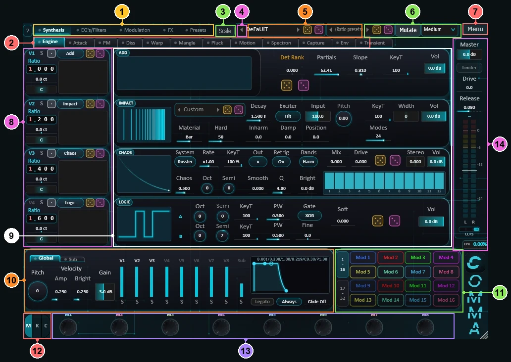
- Schede principali: Synthesis (le otto voci: i loro motori e le loro pagine), EQ's/Filters (EQ A-D, F1-F4, Modal, Warmth), Modulation (le sorgenti di modulazione e la matrice), FX (la barra degli effetti), Presets (il browser dei preset).
- Pagine della voce (scheda Synthesis): Engine, Attack, PM, Diss, Warp, Mangle, Pluck, Motion, Spectron, Capture, Env, Punch. Seguono il segnale, da sinistra a destra. L'icona prima del nome di una pagina si accende quando quella pagina sta agendo su almeno una voce.
- Scale: aggancia le note che suoni a una scala (vedi Suonare).
- ?: attiva o disattiva i suggerimenti.
- La lista dei preset, le sue frecce e i suoi due dadi.
- I preset di rapporti: accordi per le otto voci, con i propri dadi. Accanto, Mutate e la sua intensità (vedi I dadi).
- Menu: tema colore, dimensione della finestra, licenza; nell'applicazione autonoma, il suo tempo.
- Le testate delle voci: rapporto, desintonia, pan, motore, mute, solo, dadi e uno spettro in tempo reale per ogni voce. La colonna scorre fino a V8.
- Il corpo della voce: la pagina scelta in 2, per ogni voce.
- Il riquadro Global / Sub: intonazione, velocity, guadagno verso gli effetti, fader delle voci, inviluppo master, glide; oppure l'oscillatore Sub.
- Le scorciatoie Mod: trascinane una su un controllo qualsiasi per modularlo.
- Il selettore della fascia: M macro, K tastiera, C progressione di accordi.
- Le macro M1-M8 (o la tastiera, o i passi degli accordi).
- La colonna di uscita: volume Master, Limiter, misuratore, CPU, Rec.
Puoi ridimensionare la finestra trascinandone l'angolo (da 50 a 300 %), oppure con Menu → Window Size (75, 100, 125, 150 o 200 %). Menu → Theme cambia il colore: Cyan, Emerald, Azure, Violet o Silver. Entrambe le impostazioni sono memorizzate su questo computer, non nei preset.
Nell'applicazione autonoma, Menu → Standalone Tempo imposta il tempo di tutto ciò che vi si sincronizza (LFO, Delay, Taps, inviluppi con SYNC) quando nessun host ne fornisce uno: da 20 a 300 BPM, memorizzato su questo computer. In un host comanda il tempo dell'host.
5. Usare i controlli
| Gesto | Effetto |
|---|---|
| Trascinare | Cambia il valore. Le manopole seguono il trascinamento verticale od orizzontale; le caselle di valore seguono quello orizzontale. Un semplice clic non fa mai saltare un valore. |
| Clic su una casella di scelta | Fino a sei scelte: passa alla successiva (e torna alla prima dopo l'ultima). Più di sei (valori di nota, motori, modalità e sorgenti di Warp, Route...): apre un menu con tutte le scelte, ordinate in sezioni (per i valori di nota: normali, puntati, terzine), con quella attuale spuntata. Trascinando o con la rotella scorri le scelte. |
| Commutatori e selettori | (Peak / RMS / LUFS, M / K / C, i circuiti del Dist, il tipo dei Mod...) Clicca la posizione voluta, o trascina il cursore fin lì. Con due o tre posizioni, un clic su quella attuale passa alla successiva. |
| Rotella del mouse | Su una casella di valore: un passo per scatto. |
| Doppio clic | Torna al valore predefinito. Su una manopola macro: torna a riposo. Su una casella di pan: al centro. |
| Triplo clic | Apre Set value...: digita il valore nell'unità mostrata (la finestra indica l'intervallo). Invio = OK, Esc = annulla. |
| Clic destro | Il menu del controllo: Set value... e, per ogni collegamento di modulazione che lo raggiunge: Amount +10 %, Amount -10 %, Invert sign, Set amount..., Remove link. |
| Passaggio del mouse | Un fumetto mostra il valore. Con ? attivo, un suggerimento spiega il controllo. |
| SYNC (grafici d'inviluppo) | In alto a sinistra di ogni grafico d'inviluppo, tranne l'altezza: Attack, Decay e Release diventano valori di nota del tempo (da 0 a 4 battute, terzine e puntate). Ogni tempo prende il valore più vicino, letto a 120 BPM (0,5 s = una semiminima): trascinare un punto passa da un valore all'altro, e le cifre si leggono in valori di nota. Una sorgente di modulazione su Attack o Decay li muove ancora, valore per valore. Spento: tornano i tempi in secondi, invariati. |
Due tipi di fumetti: il suggerimento (a cosa serve un controllo) compare solo quando ? è acceso; l'informazione (un valore, o ciò che una sorgente di modulazione sta muovendo in quel momento) compare sempre al passaggio del mouse.
Un controllo che non ha effetto con le impostazioni attuali è in grigio (per esempio Res del filtro del Crush quando la sua Band è tutta aperta).
Etichette cliccabili
Un'etichetta non è sempre solo un nome. Alcune etichette sono esse stesse il mute o l'interruttore di ciò che nominano: clicca la parola. L'etichetta indica lo stato attuale, con il colore o con il testo. Il valore dietro un'etichetta che cambia modalità viene conservato: torna indietro e lo ritrovi.
| Etichetta | Un clic... |
|---|---|
| Numero della voce (1...8), nella testata della voce e sopra i fader delle voci | Silenzia la voce. Il numero diventa grigio, e il motore, lo spettro e la pagina della voce impallidiscono; puoi comunque regolarli. |
| Sub (sopra il suo fader) | Accende o spegne il Sub (in grigio quando è spento). |
| Titoli dei riquadri ATTACK, WARP 1, WARP 2 | Spengono o accendono quel blocco (titolo pallido quando è spento). Warp conserva la sua modalità. |
| Ratio / Hz (testata della voce) | La voce segue la tastiera secondo un rapporto, o suona una frequenza fissa. |
| Semi (Wave A e B, Logic A e B), Pitch (Impact, banda di Noise), Cut (filtro di Attack), Ratio (Mod e Rate di Mangle) | Passa alla modalità Hz: l'etichetta diventa Hz e la casella indica una frequenza. Clicca Hz per tornare indietro. |
| Div / Time (Delay, Prism), Div / Rate (Flange, Phaser, i Mod) | Un valore di nota del tempo dell'host, oppure un tempo o una velocità liberi. Si vede una sola casella, nello stesso posto. |
| Snap (Sidechain) | Scorre il magnete della curva: Off, 1/4, 1/8, 1/16, 1/32. |
| Init (Sidechain), Mask (Cloud) | Un'azione: torna la curva di partenza; tornano attive tutte le zone della maschera. |
Cliccando il titolo di un riquadro del motore (ADD, WAVE...) si apre l'elenco dei motori di quella voce. Le cuffie sono il solo, ovunque compaiano.
Annullare. Comma non ha un annulla generale, ma ogni modifica viene comunicata all'host, quindi l'annulla del tuo host può vederla. Dadi e incolla hanno il proprio annulla: clic destro su un dado per tornare allo stato precedente al lancio; Undo paste nei menu di copia.
6. Le otto voci
Ogni voce suona la nota che tieni premuta, moltiplicata per il suo rapporto. Insieme, le otto voci formano l'accordo. Una voce con il motore Empty è muta e non consuma nulla.
La testata della voce
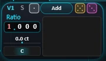
| Controllo | Cosa fa |
|---|---|
| Numero della voce | Clicca per silenziare la voce (diventa grigia, e il suo motore, il suo spettro e la sua pagina impallidiscono). Clic destro: Copy il suono di questa voce, Paste su un'altra voce, Copy to the other voices, Undo paste. Rapporto, desintonia, livello, pan, mute e solo non vengono copiati. Un Exciter di Impact che punterebbe alla voce di destinazione stessa torna su Hit. |
| Cuffie | Solo di questa voce. Una voce in solo suona anche se è silenziata. |
| Casella del motore | Il motore della voce: Add, Impact, Chaos, Logic, Shard, Wave, Sample, Noise o Empty. Clic: l'elenco dei motori (un secondo clic lo chiude); trascinare: li scorre uno per uno. Il titolo del riquadro del motore apre lo stesso elenco. |
| Dadi (tre) | Argento: estrae solo il motore (mai Empty). Oro: estrae una texture suonabile per la voce (circuito di dissonanza, Pluck, PM, Spectron con la sua curva, e i suoi due Warp). Rosa: lo stesso su tutto il loro intervallo. Clic destro su uno qualsiasi: torna com'era. |
| Ratio | Altezza della voce come multiplo della nota: 1 = la nota, 2 = un'ottava sopra, 1,5 = una quinta (da 0,1 a 8). Trascina una cifra in alto o in basso per cambiarla (Ctrl: più lento), clicca per digitare un valore. Rilascia qui una sorgente di modulazione per modulare l'altezza di questa sola voce, in semitoni. Clicca l'etichetta Ratio, o clic destro sulla casella, per una frequenza fissa (da 10 a 999,9 Hz): la voce ignora la tastiera, per un drone, una cassa o un tom. Pitch, desintonia e inviluppo di altezza continuano a muoverla. |
| ct (V Detune) | Desintona la voce rispetto al suo rapporto, qualunque sia il motore (fino a 2 semitoni in entrambe le direzioni). Pochi cent rispetto alle altre voci: battono e l'accordo respira. Clic destro: desintonia in Hz (fino a 20 Hz in entrambe le direzioni), lo stesso battimento su ogni nota, mentre i cent battono più in fretta salendo sulla tastiera. |
| Pan | Pan della voce. Doppio clic: al centro. L'impostazione Stereo di Spatial allarga o restringe tutte le voci insieme. |
| Spettro | Lo spettro in tempo reale dell'uscita di questa voce (da 30 Hz a 16 kHz, gamma di 72 dB). |
Il livello di ogni voce è il suo fader nel riquadro Global, con tacche a 0 e -6 dB.
Livelli: i guadagni li gestisci tu
In Comma, 0 dB significa "il livello non cambia". Come su un mixer, nulla abbassa il livello a tua insaputa: due voci allo stesso livello suonano più forte di una, silenziare una voce non alza le altre, e otto voci a pieno livello sta a te abbassarle. Una protezione alla fine dell'uscita arrotonda solo ciò che saturerebbe; non è un controllo di livello.
Il margine è quindi visibile, nelle impostazioni. Un suono nuovo parte con il fader di ogni voce a -6 dB, Gain (livello verso gli effetti) a -3 dB e Master a -9 dB. Un doppio clic riporta questi tre a quei valori. I preset conservano i propri livelli.
Preset di rapporti
La lista in alto a destra, (Ratio presets), memorizza solo i rapporti: un accordo per le otto voci. Caricarne uno cambia le note dell'accordo, mai il suono. La lista contiene anche accordi integrati. Il suo dado d'oro estrae un accordo con rapporti naturali (ottave, quinte, terze, armoniche naturali); il suo dado rosa estrae rapporti ovunque nell'intervallo ("per lo più inutilizzabili, ogni tanto qualcosa che nessuno avrebbe scritto"). Clic destro su un dado per annullare.
7. I motori
La pagina Engine mostra la casella del motore di ogni voce. Ogni motore ha un Vol (il suo livello nella voce) e un KeyT (key tracking: a 100 il motore segue la nota; a 0 resta vicino al C4 qualunque cosa suoni, un'altezza o una texture fissa; nel mezzo la segue di meno). Diversi controlli di altezza hanno una modalità Hz: clicca l'etichetta (Semi, Pitch o Cut) per impostare invece una frequenza fissa, cliccala di nuovo per tornare indietro. In modalità Hz la rotella del mouse dà passi fini.
Clicca il titolo di un motore (ADD, IMPACT...) per aprire l'elenco dei motori e cambiarlo: lo stesso elenco della testata della voce. Nulla cambia finché non scegli; un secondo clic chiude l'elenco. Il motore di una voce silenziata impallidisce.
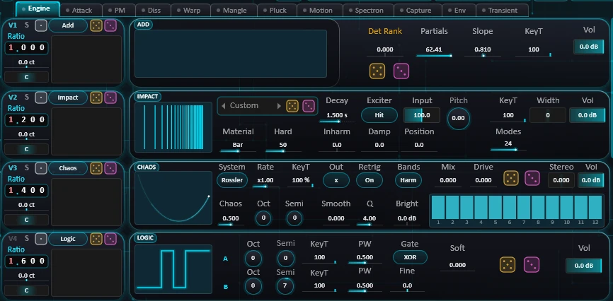
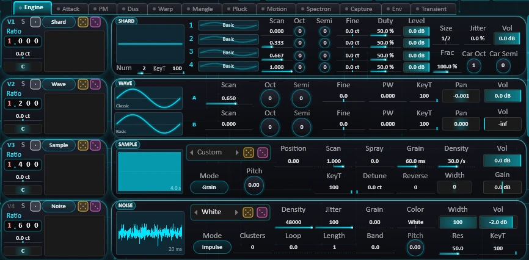
Sfogliare. I grafici di Wave, delle tabelle di Shard, di Impact, Sample e Noise hanno due frecce, a sinistra e a destra: scorrono l'elenco senza aprirlo. Gli elenchi sono ordinati per famiglie (le sottocartelle della libreria, per tabelle e campioni).
Le tue ricette. Gli elenchi di Impact, Sample e Noise memorizzano le loro impostazioni come ricette. Cambia una ricetta e l'elenco mostra Custom; nella colonna destra dell'elenco, Save, Save As, Rename e Delete gestiscono le tue (quelle di Comma sono protette), e Recipes apre la loro cartella. Le tue compaiono nelle stesse famiglie. I dadi attingono solo a quelle di Comma.
File mancanti. Quando un preset chiede una tabella o un campione che non hai, l'elenco o il grafico indica MISSING; passaci sopra il mouse per leggere il nome del file. Una tabella mancante suona Basic.
Add
Il motore additivo: la voce è costruita da parziali (armoniche), ciascuna calcolata separatamente. È il motore su cui le pagine della voce agiscono con più finezza, parziale per parziale.
| Controllo | Cosa fa |
|---|---|
| Grafico | Le parziali come le costruisce il motore: una barra per parziale, alla sua frequenza (da 20 Hz a 20 kHz, tacche a 100 Hz, 1 kHz e 10 kHz; senza nota, l'ultima suonata) e al suo livello. Con KeyT a 100 il pettine segue i tasti; a 0 resta fermo. |
| Det Rank | Come la desintonia della voce (V Detune) si distribuisce sulle sue parziali. 0: la stessa desintonia su tutte, si muovono insieme (un chorus). +1: raddoppia dalle parziali basse a quelle alte; -1 il contrario: ognuna batte con il proprio ritmo (uno sciame). Nessun effetto finché V Detune è a 0. |
| Partials | Quante parziali vengono calcolate, anche frazionario (l'ultima entra in dissolvenza). Muovilo per un'apertura continua dello spettro. |
| Slope | Equilibrio dei livelli delle parziali. 1 = classico (ogni parziale a 1/n, come una dente di sega). Più basso = più brillante: 0 = tutte uguali, sotto 0 la parte alta si fa più forte. Più alto = più scuro. Il livello complessivo resta lo stesso. |
| KeyT, Vol | Key tracking e livello (vedi sopra). |
| Dadi | Oro: uno spettro suonabile (Partials da 4 a 40, Slope da 0,6 a 1,6, un Det Rank moderato). Rosa: Partials, Slope e Det Rank su tutto il loro intervallo. |
Impact
Un oggetto percosso: un insieme di modi risonanti, dai tubi quasi armonici alle piastre dense e metalliche.
| Controllo | Cosa fa |
|---|---|
| Grafico | I modi dell'oggetto: ogni barra è un modo, posta in base alla frequenza (da un'ottava sotto la nota a nove sopra), alta quanto Position le permette di risuonare, più luminosa quanto più dura. Clic: la lista degli oggetti. |
| Lista degli oggetti | Ricette di Impact per categoria. Custom quando nessuna corrisponde. Dado d'oro: un'altra categoria della stessa famiglia; dado rosa: l'intero oggetto ovunque. |
| Material | Tube, Bell, Bar, Membrane, Plate, da quasi armonico a denso. Tra due materiali viene mostrato il più vicino con ~. Puoi digitare un nome o un numero. |
| Hard | Quanto forte viene colpito: 0 = una mazzuola morbida (i modi alti risuonano appena), 100 = un clic. |
| Decay | Quanto a lungo risuona, in secondi (fino a -60 dB). |
| Inharm | Sotto 0 i modi si avvicinano a una serie armonica (l'oggetto diventa una nota); sopra 0 si allontanano ancora di più. |
| Damp | Quanto più rapidamente si spengono i modi alti rispetto a quelli bassi: 0 = metallo, 100 = legno o cartone. |
| Position | Dove viene colpito: 0 = il bordo (tutti i modi), 100 = il centro (un modo su due muto: più cavo). |
| Exciter | Hit: un colpo a ogni nota. V1-V8: il suono di quella voce, qualunque sia il suo motore, eccita l'oggetto in continuo (silenzia quella voce per sentire solo l'oggetto). La propria voce, o voci Impact che si eccitano a vicenda in un anello: nessun ingresso. |
| Input | Quanto della voce eccitatrice agisce sull'oggetto (solo V1-V8). |
| Pitch | Dimensione dell'oggetto, in semitoni rispetto alla nota. Modalità Hz: il primo modo a una frequenza fissa (utile all'incirca da 40 Hz a 3 kHz). |
| Width | 0: mono. Sopra: il lato destro è una copia leggermente desintonata dell'oggetto (il doppio della CPU). |
| Modes | Quanti modi risuonano: meno = più puro e più leggero per la CPU. |
Chaos
Un sistema dinamico suonato a frequenza audio, poi scolpito da dodici bande.
| Controllo | Cosa fa |
|---|---|
| Grafico | L'attrattore del sistema, come lo impostano System e Chaos (un'immagine, non il suono stesso). |
| System | Rossler (quasi periodico, il più tonale), Lorenz (due ali, ribaltamenti improvvisi), Duffing (una molla forzata: da morbido a ruvido), Logistic (una sequenza a gradini: granuloso). |
| Chaos | Da 0 (il sistema gira in ciclo: una nota pulita) a 1 (completamente caotico: una texture rumorosa). Nel mezzo compaiono una a una le sotto-ottave. |
| Rate | Velocità del sistema rispetto alla nota, da x0.25 a x4. |
| Out | Quale variabile si ascolta: x, y, z o x+y. Su Lorenz, z segue meglio la nota. |
| Retrig | On: ogni nota fa partire il sistema dallo stesso punto. Off: continua a girare, due note non sono mai uguali. |
| Oct, Semi | Ottava e semitoni del sistema rispetto alla nota. |
| Smooth | Un passa-basso che segue la nota: 0 = il sistema grezzo, 1 = fino alla nota stessa. |
| Bands | Harm: dodici bande strette sulle armoniche da 1 a 12 della nota (il caos diventa una nota intonata). Oct: bande fisse da 40 Hz a 16 kHz. Disegna i loro livelli sul grafico delle bande. |
| Q | Selettività delle bande, da 0,5 a 30. In Harm, più alto = un'intonazione più pulita. |
| Bright | Schiarisce (+) o scurisce (-) tutte le bande insieme, in dB per ottava. |
| Mix | Dal caos grezzo (0) al caos filtrato dalle bande (1), allo stesso livello. |
| Drive | Satura il sistema prima delle bande (sovracampionato, stesso livello). |
| Stereo | Un'altra variabile del sistema viene aggiunta a sinistra e sottratta a destra: l'attrattore nello spazio. |
| Dadi | Oro: un sistema suonabile. Rosa: tutto quanto sopra su tutto il suo intervallo. Nessuno dei due tocca KeyT, Retrig, Oct, Semi, le bande disegnate o Vol. |
Logic
Due onde quadre, A e B, combinate in un solo bit da una porta logica.
| Controllo | Cosa fa |
|---|---|
| Grafico | Un ciclo di A e di B, e ciò che la porta ne ricava. |
| A, B | Clicca la lettera per accendere o spegnere una quadra (una spenta: l'altra suona da sola). |
| Oct, Semi | Altezza di ciascuna quadra rispetto alla voce (modalità Hz su Semi). |
| KeyT | Per ciascuna quadra. Tieni A a 100 e abbassa B: la porta batte a un ritmo costante su ogni nota -- una sequenza, o una grana. |
| PW | Larghezza d'impulso di ciascuna quadra. |
| Gate | Come le due quadre si combinano in un solo bit: XOR, XNOR, AND, NAND o OR. |
| Fine | Desintona B in cent: il battimento che fa muovere il suono. |
| Soft | Arrotonda gli spigoli: un passa-basso che segue la nota. |
| Dadi | Oro: una coppia suonabile (A vicino alla nota, B su un intervallo musicale). Rosa: Oct, Semi, PW, Gate, Fine e Soft ovunque. |
Shard
Fino a quattro wavetable che si alternano in brevi frammenti ("shard"), ciascuno ripartito dall'inizio della propria tabella. La nota si sente attraverso le ripartenze; le tabelle danno la texture.
| Controllo | Cosa fa |
|---|---|
| Grafico | Un giro di frammenti affiancati, alternati in ciano e bianco. |
| Tabelle 1-4 | La tabella di ciascun frammento. Clic: scegline un'altra; clic destro: apri o rianalizza la cartella Wavetables; trascina lateralmente: scorrila; frecce: la tabella precedente o successiva. |
| Scan, Oct, Semi, Fine | Per frammento: posizione nella sua tabella, e la sua altezza rispetto alla portante (più cicli compressi: la texture cambia, la nota resta). |
| Duty | Piega la forma del frammento: dove cade la sua metà (50 % = come disegnata). |
| Level | Livello di ciascun frammento. |
| Num | Quanti frammenti si alternano, da 1 a 4. 1: la tabella suona da sola, nulla riparte. |
| Size | Lunghezza di un frammento, in periodi della nota: da 1/64 (briciole, aspro) a 64 (blocchi lunghi). |
| Frac | Lunghezza fine, in % di Size. Tra valori tondi le ripartenze si sfasano rispetto alla nota: subarmoniche, texture aliene. |
| Jitter | Ogni frammento riceve una lunghezza casuale (dalla metà al doppio a 100 %): solo la texture, senza la nota. |
| Car Oct, Car Semi | La portante: la velocità con cui ogni frammento legge la sua tabella (da -4 a +6 ottave rispetto alla nota). Più alta: una banda più brillante; più bassa: più granulosa. |
Wave
Due oscillatori wavetable, A e B.
| Controllo | Cosa fa |
|---|---|
| Grafici delle tabelle | Ogni tabella al suo Scan e al suo PW. Clic: scegli un'altra tabella; clic destro: apri o rianalizza la cartella; trascina lateralmente: scorri; frecce: la tabella precedente o successiva. |
| A, B | Clicca la lettera per accendere o spegnere una tabella (spenta: non calcolata, il suo Vol viene conservato). B è muta per impostazione predefinita (Vol a -inf). |
| Scan | Posizione nella tabella. |
| Oct, Semi, Fine | Altezza della tabella rispetto alla voce. Modalità Hz su Semi: un clock fisso che ignora la nota. |
| PW | 0: la tabella come disegnata. Avvicinandosi a 0,5 un pettine scava le armoniche pari (del tutto sparite a 0,5). |
| KeyT, Pan, Vol | Per tabella. |
Le tue tabelle: metti file WAV in Documents\Comma\Wavetables (frame da 2048 campioni, o tabelle in stile Serum;
fino a 256 frame), anche in sottocartelle, poi clic destro su un grafico di tabella → Rescan folder. Anche Capture può creare tabelle (vedi
Capture).
Sample
Legge un file WAV, come nuvola di grani o una volta per nota.
| Controllo | Cosa fa |
|---|---|
| Lista dei file | I file WAV della libreria Samples, per sottocartella. Dado d'oro: un altro file; dado rosa: le impostazioni dei grani ovunque. |
| Grafico | Il file. Grain: Position (la linea) e la dispersione di Spray. One-shot: in ciano, ciò che suona. Clic: la lista dei file; trascina lateralmente: Position. |
| Mode | Grain: grani letti attorno a Position. One-shot: il file suona una volta per nota da Start per la durata di Length, poi sfuma. |
| Position (Start) | Dove inizia la lettura, in %. |
| Scan | Grain: velocità con cui avanza la lettura (1 = tempo reale, 0 = congelata, sotto 0 = all'indietro). |
| Spray | Grain: spostamento casuale di ogni grano (0 = pulito, 100 % = ovunque nel file). |
| Grain, Density | Grain: lunghezza di ogni grano (ms) e grani al secondo. |
| Length, Fade | One-shot (al posto di Scan e Spray): quanto suona, e la dissolvenza alla fine. |
| Pitch, KeyT | Sul C4 il file suona alla sua altezza originale. KeyT 0: mantiene l'altezza del file. |
| Detune | Desintonia casuale di ogni grano (un chorus, poi uno sciame). One-shot: sinistra e destra si allontanano. |
| Reverse | Quota di grani suonati all'indietro. One-shot: sopra il 50 % il segmento suona all'indietro. |
| Width | Distribuisce i grani (o le due letture one-shot) nel campo stereo. |
| Gain | Guadagno prima di Vol, per pareggiare un file più forte o più debole degli altri. One-shot: il file suona al proprio livello (0 dB = come è stato registrato). |
I tuoi suoni: metti file WAV in Documents\Comma\Samples (qualsiasi WAV; letto in mono, fino a 30 s), anche in sottocartelle. Le liste rileggono la
cartella ogni volta che si aprono; Samples, nella loro colonna destra, la apre. La stessa libreria alimenta Sample, Noise in modalità Sample e lo strato Attack.
Noise
Un generatore di rumore fatto di impulsi, con una banda risonante sulla nota.
| Controllo | Cosa fa |
|---|---|
| Lista delle categorie | Ricette di Noise per categoria. Dado d'oro: un'altra categoria della stessa famiglia; rosa: l'intero generatore ovunque. |
| Grafico | Ciò che produce il generatore, prima della Band. Clic: la lista dei suoni. |
| Mode | Impulse: una pioggia di impulsi. LFSR: fruscio digitale. Metal: un timbro metallico, intonato quando Jitter è a 0. Sample: un WAV della libreria, in loop (Speed sostituisce Density). Paper: crepitii che fanno risuonare una fibra accordata sulla nota -- carta stropicciata, shaker. |
| Density | Impulsi al secondo: da crepitii isolati a un fruscio continuo. Modalità Sample: sostituito da Speed, la velocità di lettura in semitoni. |
| Jitter | 0 %: impulsi regolari (un ronzio). 100 %: tempi, segno e intensità casuali (rumore). Paper: anche quanto sono irregolari i crepitii. Nessun effetto in modalità Sample. |
| Grain | Lunghezza di ogni impulso: da un clic secco a delle gocce. LFSR e Metal: uno smussamento fino a 10 ms. Nessun effetto in modalità Sample. |
| Color | Pendenza dello spettro: Brown, Pink, White, Blue, Violet (o qualsiasi valore intermedio). Paper: il corpo della fibra, dal cartone (Brown) al cellophane (Violet). |
| Width | 0 %: lo stesso rumore a sinistra e a destra; 100 %: due rumori indipendenti. |
| Clusters | Raggruppa gli impulsi in raffiche e silenzi, senza cambiarne il numero. Ogni nota parte in una raffica. Modalità Sample: taglia il file in raffiche. |
| Loop, Length | Riproduce ciò che è uscito una Length prima (in periodi della nota). Loop 100 %: si congela -- con Length 1, una nota dal timbro di rumore. Non usato in modalità Paper. |
| Band, Pitch, Res | Una banda risonante sulla nota: quanto (0 = spenta, 100 % = solo la banda), dove (semitoni, o modalità Hz), quanto stretta (da un fruscio colorato a un fischio). Paper: Band regola quanto passa attraverso la fibra, Res se è accartocciata o cantante. |
Empty
Nessun motore: la voce è muta e non calcola nulla. Le sue pagine mostrano "Empty slot: no engine."
8. Le pagine della voce
La riga sotto le schede principali sceglie cosa mostra il corpo di ogni voce. Le pagine seguono il segnale della voce, da sinistra a destra: motore (con Attack e PM) → Diss → Warp → Mangle → Pluck, Motion, Spectron, Capture → Env → Punch. La maggior parte delle pagine è per voce; Motion e Capture sono condivise da tutte le voci (le stesse impostazioni compaiono in ogni riga). PM esiste per Add, Wave, Logic e Shard; una pagina che non si applica a un motore indica "Not available for this engine, for now."
Attack
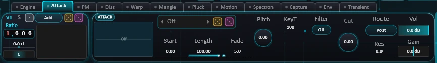
Un file one-shot per voce, suonato a ogni nota sopra il suo motore: un clic, un colpo, un attacco colorato.
| Controllo | Cosa fa |
|---|---|
| Lista dei file | I file one-shot. Off: lo strato è muto. Dado d'oro: un altro file; rosa: Start, Length, Fade e Pitch. |
| Grafico | Il file e, in ciano, ciò che suona sul C4. Trascina lateralmente: Start. |
| Start, Length, Fade | Dove inizia la riproduzione, quanto suona, la dissolvenza alla fine. |
| Route | Post: aggiunto dopo l'inviluppo della voce, senza i suoi effetti -- il clic resta intero anche con un attacco lento. Pre: miscelato con il motore prima dei suoi effetti e dei Warp -- prende il colore e l'inviluppo della voce. La pagina Punch tratta anche lo strato Post. |
| Pitch, KeyT | Sul C4 il file suona alla sua altezza originale; KeyT 0 la mantiene lì. |
| Gain, Vol | Guadagno per pareggiare il file a orecchio (0 dB = il file come è stato registrato), poi il livello dello strato. |
| Filter, Cut, Res | Off, LP, BP o HP sullo strato; frequenza di taglio in semitoni rispetto alla voce (modalità Hz sull'etichetta). Un BP stretto trasforma un clic in un ping. |
PM -- modulazione di fase
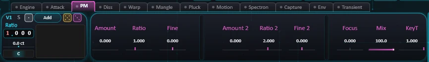
Due modulatori spingono la fase della voce: attorno a ciascuno compaiono nuove parziali. Per voce.
| Controllo | Cosa fa |
|---|---|
| Amount | Profondità della modulazione. 0 = spenta, nulla viene calcolato. |
| Ratio | Frequenza del modulatore, come multiplo dell'altezza della voce. Numeri interi: le nuove parziali cadono sulla serie armonica. Valori intermedi: campana, metallo. |
| Fine | Desintona il modulatore, in % della sua frequenza: le nuove parziali battono. |
| Focus | (Solo Add) Quali parziali vengono modulate: -1 = solo le basse, +1 = solo le alte. |
| KeyT | Al massimo: i modulatori seguono la nota (lo stesso timbro ovunque). 0: una frequenza fissa, per le percussioni. |
| Mix | Miscela ogni parziale modulata con quella non modulata. 100 % = PM pura; attorno al 50 % le parziali si annullano e ritornano. |
| Amount 2, Ratio 2, Fine 2 | Il secondo modulatore. Spinge la stessa fase: le nuove parziali di entrambi si combinano. Condivide KeyT e Mix. |
| Init | Riporta ogni impostazione PM di questa voce al valore predefinito. |
Diss -- il circuito di dissonanza
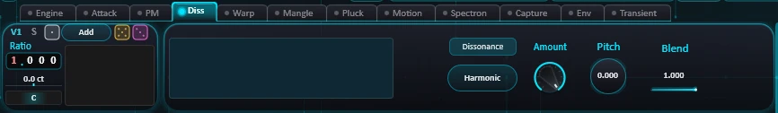
Allontana le parziali dalla serie armonica. Il grafico mostra ciò che suona la voce (su Add, le barre lasciano la griglia armonica).
| Controllo | Cosa fa |
|---|---|
| Dissonance | Accende o spegne il circuito di questa voce. Spento: le sue parziali restano armoniche. |
| Type | Harmonic, Semitone, Metal, PitchShift o FreqShift. |
| Amount | Profondità. Harmonic: sopra 1 le parziali si allargano, sotto 1 si stringono, 1 = intatte. Metal, Pitch Shift, Freq Shift: scala ciò che imposta Pitch. |
| Pitch | Dipende dal tipo. Harmonic: stiramento aggiuntivo che cresce con il rango della parziale. Semitone: dimensione della griglia, da 12 a 31 note per ottava. Metal: rigidità. Pitch Shift: ±24 semitoni. Freq Shift: ±500 Hz. |
| Blend | Quanto del circuito viene applicato: 0 = armonico, qualunque siano le altre impostazioni. |
| Init | Riporta ogni impostazione Diss di questa voce al valore predefinito. L'interruttore Dissonance resta. |
Sui motori diversi da Add il circuito agisce dopo il motore, come uno shifter.
Warp
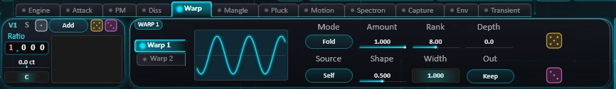
Due slot di warp per voce, dopo il suo motore; Warp 2 segue Warp 1. Le schede Warp 1 e Warp 2 a sinistra mostrano uno slot alla volta (ogni voce ricorda il proprio); il punto di una scheda si accende quando il suo slot non è su Off. Clicca il titolo WARP 1 / WARP 2 per accendere o spegnere uno slot (le sue impostazioni vengono conservate).
| Controllo | Cosa fa |
|---|---|
| Grafico | La curva del warp: ingresso in orizzontale, uscita in verticale. |
| Mode | Fold, Drive, Rect, Crush: la voce da sola. RM, AM, Gate: moltiplicata per la sorgente. Min: il minore dei due. Div: la voce divisa per la sorgente, addomesticata. |
| Source | Ciò che leggono RM, AM, Gate, Min e Div: questa voce (Self), un'altra voce o il Sub. Una voce usata come sorgente continua a girare anche se silenziata. |
| Amount | Dal suono originale (0) a quello deformato (100 %). |
| Shape | Il parametro della modalità: quanto spingere (Fold...Crush), quanto è dura la sorgente (RM, AM, Gate), il carattere (Min, Div). |
| Rank, Width | Una banda, in armoniche della voce (segue la nota), e la sua larghezza. |
| Depth | 0: nessuna banda, tutto il suono viene deformato. Fino a 96 dB: viene deformata solo la banda. |
| Out | Fuori dalla banda: Keep mantiene la voce com'era, Cut la taglia (con Amount al 100 % si sente solo la banda deformata). |
| Dadi | Ogni slot ha la propria coppia. Oro: un warp suonabile (una vera modalità, Amount e Shape addomesticati, una banda su un'armonica, Keep). Rosa: tutte le modalità, sorgenti e impostazioni della banda, Off e Cut compresi. Clic destro: torna allo slot com'era prima del lancio. Il dado d'oro della testata della voce estrae entrambi gli slot. |
| Init | Riporta ogni impostazione Warp di questa voce al valore predefinito: entrambi gli slot, qualunque sia quello visibile. I loro on / off restano. |
Mangle
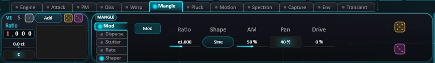
"Qualcosa che stravolge tutto": cinque blocchi per voce, dopo i Warp e prima dell'inviluppo della voce, per tutti i motori. Ogni blocco ha il proprio interruttore ed è spento per impostazione predefinita (spento, non calcola nulla). Le schede a sinistra mostrano un blocco alla volta (ogni voce ricorda il proprio); il punto di una scheda si accende quando il suo blocco è acceso per questa voce. Ogni blocco ha un dado d'oro (impostazioni suonabili) e un dado rosa (ovunque); entrambi accendono il blocco, il clic destro torna indietro. Init riporta ogni impostazione Mangle di questa voce al valore predefinito: tutti e cinque i blocchi, qualunque sia quello visibile. I loro interruttori e la curva dello Shaper restano.
Modulabili (sezione Mangle del menu delle destinazioni, per tutte le voci insieme o voce per voce): Mod Ratio, Hz, AM, Pan e Drive; Disperse Freq, Sweep, Rate e Mix; Stutter Chance e Speed; Rate Ratio, Hz e Mix; Shaper Drive e Mix.
Il suono attraversa i blocchi in un ordine fisso: Stutter → Shaper → Rate → Mod → Disperse.
| Blocco | Controllo | Cosa fa |
|---|---|---|
| Mod | Mod | Un oscillatore nella gamma udibile muove il livello, il pan e il drive della voce: bande laterali, ronzio, grana. |
| Ratio / Hz | La sua frequenza come rapporto della nota della voce (da x0,25 a x16: le bande laterali seguono la tastiera), oppure, cliccando l'etichetta, una frequenza fissa (da 0,5 Hz a 5 kHz: un tremolo sotto i 20 Hz, un ringhio o un suono da modulatore ad anello sopra). | |
| Shape | Sine (morbida), Triangle (un po' più brillante), Square (commutazione netta, ronzante), S&H (un nuovo valore casuale a ogni ciclo). | |
| AM | Quanto si muove il livello: 0 = fermo, 100 % = dal silenzio al massimo. Nulla viene aggiunto sopra la voce. | |
| Pan | Quanto la voce si sposta tra sinistra e destra, alla velocità dell'oscillatore. | |
| Drive | Una saturazione la cui durezza segue l'oscillatore: la grana pulsa con esso. Il livello viene mantenuto. | |
| Disperse | Stages | 8, 16 o 32 stadi passa-tutto: da una leggera dispersione a un lungo chirp laser (32 costa quattro volte 8). |
| Freq | Il centro della dispersione, da 100 Hz a 8 kHz: le frequenze attorno a esso sono le più ritardate. | |
| Q | Basso = largo e morbido, alto = un chirp più netto e risonante. | |
| Sweep, Rate | Quanto si sposta il centro (fino a due ottave per lato) e a che velocità (da 0,02 a 10 Hz): le tacche viaggiano. | |
| Mix | 50 % scava le tacche più profonde (un colore da flanger), 100 % è la sola dispersione. | |
| Non è lo stesso Disperse della barra degli effetti: questo è per voce, più corto, e fa uno sweep. | ||
| Stutter | Every | La griglia, al tempo dell'host (1/8, 1/4, 1/2, 1 battuta). A ogni passo la voce estrae se balbetterà fino al passo successivo. La griglia riparte a ogni nota. |
| Length | La fetta che si ripete: da 1/64 (un ronzio) a 1/8 (un loop ritmico). | |
| Chance | Quanto spesso un passo balbetta: 0 = mai, 100 % = a ogni passo. Ogni voce estrae per conto suo. | |
| Speed | Riproduzione della fetta: x1 com'era, x0,5 un'ottava sotto, x2 un'ottava sopra; sotto 0, al contrario. | |
| Mix | La fetta ripetuta sopra la voce dal vivo: 100 % = solo la fetta mentre balbetta. | |
| Rate | Ratio / Hz | La voce viene campionata a una frequenza più bassa e tenuta tra un campione e l'altro: gradini e aliasing. Ratio (da x0,5 a x32 della nota): l'aliasing resta intonato con la tastiera. Cliccando l'etichetta: una frequenza fissa, da 100 Hz a 24 kHz. |
| Smooth | Arrotonda i gradini: 0 = gradini netti (aliasing brillante), 100 % = morbido e scuro. | |
| Mix | La voce ridotta sopra quella pulita. | |
| Shaper | Grafico | Una curva di distorsione che disegni, con gli stessi gesti della curva Custom del Dist: il clic aggiunge un punto, trascinare lo sposta, l'anello curva un segmento, il doppio clic lo elimina. La curva viene salvata con il preset. |
| Drive | Quanto forte la voce viene spinta nella curva: da x1 a x16 (+24 dB). La zona illuminata del grafico mostra fin dove arriva. Il livello viene mantenuto. | |
| Mix | La voce sagomata sopra quella pulita. | |
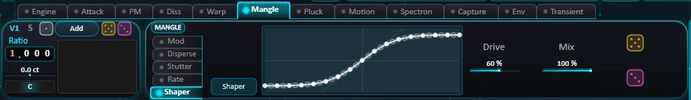
Pluck
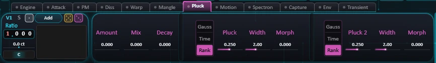
Due filtri a pettine che scavano tacche tra le parziali della voce.
| Controllo | Cosa fa |
|---|---|
| Amount | Quanto sono profonde le tacche, per entrambi i pettini. 0 = spento. |
| Mix | 0 = solo Pluck, 0,5 = entrambi al massimo, 1 = solo Pluck 2. |
| Decay | Le stesse tacche sul decadimento: una parziale su una tacca si spegne prima; l'attacco resta pieno. |
| Mode | Rank: tacche sui numeri di parziale, seguono la nota (una corda pizzicata). Time: tacche a frequenze fisse (un flanger). Gauss: una campana morbida centrata su una parziale. |
| Pluck, Pluck 2 | Rank: il punto in cui viene pizzicata la corda (a 1/5 la 5ª parziale scompare). Time: il ritardo, da 0,1 a 10 ms. Gauss: il centro della campana. |
| Width | Larghezza della campana Gauss, in parziali. |
| Morph | Miscela Rank e la campana Gauss. Nessun effetto in Time. |
| Init | Riporta ogni impostazione Pluck di questa voce al valore predefinito. |
Motion
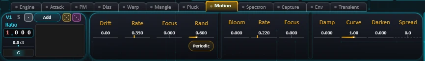
Ciò che fa variare le parziali nel tempo. Condivisa da tutte le voci.
| Controllo | Cosa fa |
|---|---|
| Drift | Lenta deriva dell'altezza di ogni parziale, in cent (fino a un'ottava). Pochi cent: il suono vive. Oltre un semitono: le armoniche si dissolvono in una nuvola. 0 = spento. |
| Rate | Velocità della deriva, da 0,02 a 4 Hz. |
| Focus | Distribuisce la deriva sullo spettro: +1 la fondamentale resta ferma e la parte alta si muove il doppio; -1 il contrario. |
| Rand, modalità | Periodic: ogni parziale vaga su una sinusoide lenta. Random: scivola tra obiettivi casuali; Rand imposta l'ampiezza degli spostamenti. |
| Bloom | Ogni parziale respira in livello (dal silenzio al doppio del volume al massimo), con il livello medio invariato. |
| Rate, Focus (Bloom) | Velocità (da 0,02 a 8 Hz) e distribuzione del bloom (+1 = respira la parte alta, la fondamentale resta). |
| Damp | Quanto velocemente si spengono le parziali alte. La nota non è più corta; è solo la sua parte alta a morire per prima. |
| Curve | Come cresce Damp con il rango della parziale: 1 = in proporzione (una corda), 2 = con il quadrato (molto più spento). |
| Darken | Le parziali alte percorrono l'inviluppo più in fretta: al massimo, la parziale n lo percorre n volte più veloce della fondamentale. |
| Spread | Scagliona l'attacco delle parziali, in ms. Positivo: prima la parte alta; negativo: prima la parte bassa. |
Spectron
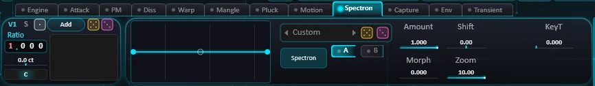
Una curva di guadagno che disegni sullo spettro, applicata alle parziali della voce. Va da −60 dB a +12 dB. Alzare una zona abbassa tutto il suono perché il livello non salga; scavare una zona non viene compensato: ciò che togli resta tolto.
| Controllo | Cosa fa |
|---|---|
| Grafico | Clicca per aggiungere un punto, trascina per spostarlo, trascina l'anello al centro di un segmento per curvarlo, doppio clic su un punto per eliminarlo. Clic destro: la griglia di aggancio. |
| Banco | Le curve di Spectron: scegline una per caricarla. Dado d'oro: una curva del banco; dado rosa: una nuova curva (da 3 a 8 punti, ±12 dB). |
| Spectron | Accende o spegne la curva per questa voce. |
| Amount | Quanto della curva viene applicato: 0 = niente, 1 = tutta. |
| Shift | Sposta l'intera curva lungo l'asse delle frequenze, in ottave. |
| KeyT | 0: la curva è fissa in Hz (la cassa di uno strumento). 1: si sposta con la tastiera. |
| A / B | Due curve per voce. La scheda sceglie quella su cui lavorano il grafico, il banco e i dadi; l'altra è tracciata in chiaro. |
| Morph | Dalla curva A (0) alla curva B (1). Con lo stesso numero di punti, ogni punto scivola al suo posto in B: disegna due vocali (il banco contiene Vowel A, E, I, O, U) e il suono parla. Una destinazione di modulazione (Spectron Morph). |
| Zoom | La larghezza, in ottave, in cui si applica tutto il disegno (10: tutto lo spettro). Più in basso, il disegno si stringe in una finestra stretta, neutra all'esterno, che Shift percorre come una risonanza. La traccia chiara del grafico è ciò che suona. |
Capture
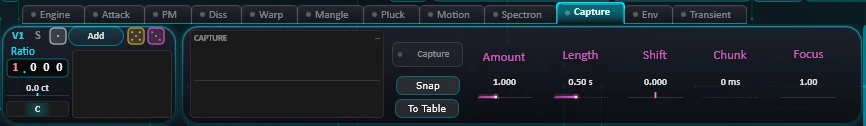
Fotografa ciò che la catena degli effetti fa allo spettro, poi applica quell'impronta alle parziali. Condivisa da tutte le voci.
| Controllo | Cosa fa |
|---|---|
| Display | La foto in memoria, sui suoi 16 istanti catturati. |
| Snap | Scatta una nuova foto (per la durata di Length). Automatizzabile dall'host come Capture Snap. |
| Capture | On: la foto viene applicata. Off: conservata ma non applicata. Accenderlo senza una foto ne scatta una. Acceso = applicata, punto = c'è una foto in memoria, lampo bianco = appena scattata. Né lampo né punto: lo spettro era troppo piatto -- prima suona con gli effetti (Lush, Cloud, Reverb, Dist). |
| To Table | Trasforma la foto in una wavetable (Scan percorre i 16 istanti) salvata nella cartella Wavetables con il nome che le dai, per una voce Wave. |
| Amount | 0 = niente, 1 = come fotografata, fino a 3 = esagerata. |
| Length | L'intervallo fotografato. Impostalo prima di catturare. |
| Shift | Si muove nel tempo fotografato, dal più vecchio al più recente: uno sweep di colore, non di altezza. |
| Chunk | Percorre i 16 istanti a blocchi di questa durata (0 = uno scorrimento continuo; 20 ms: uno slapback spettrale; 2 s: un morph lento). |
| Focus | 1: la foto così com'è. Più alto: restano solo i suoi picchi. |
| Retrig | A ogni Chunk, riaccende le parziali che Damp ha spento: un piccolo attacco brillante a ogni passo. Richiede Capture acceso, un Chunk e un po' di Damp (pagina Motion). 0 = nessun attacco, 1 = pieno. |
| Init | Ritorno a zero: ogni impostazione di Capture al valore predefinito, Capture spento, e la foto viene cancellata. |
La foto viene salvata con il preset.
Env -- inviluppi e fasi
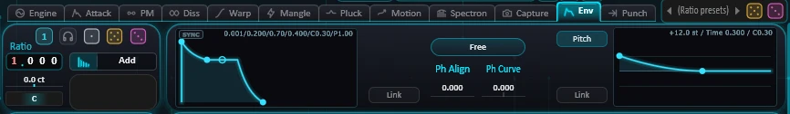
L'inviluppo d'ampiezza di ogni voce, qualunque sia il suo motore, le sue fasi iniziali e il suo inviluppo di altezza.
| Controllo | Cosa fa |
|---|---|
| Grafico dell'inviluppo | Trascina i punti: Attack e Release in orizzontale (tempo), la fine del Decay in orizzontale e in verticale (Sustain), il plateau in verticale. Rotella o clic destro: la curva dei segmenti. Ctrl: passi fini. Le cifre indicano A / D / S / R / curva. Rilascia una sorgente di modulazione su Attack o Decay per modularli. Il punto di Attack si sposta anche in verticale: il picco che l'attacco raggiunge (Peak, 1 = pieno). Sotto il Sustain, l'inviluppo risale verso di esso dopo l'attacco. Modella solo l'inviluppo; la pagina Punch doma il colpo contenuto nel suono stesso. |
| Link | Gli inviluppi collegati si muovono insieme: ne cambi uno, gli altri seguono. Collegare una voce le assegna l'inviluppo di quelle già collegate. |
| Free / Retrig | Quando vengono impostate le fasi iniziali delle parziali: solo dopo che il suono si è spento (Free) o a ogni nota (Retrig) -- anche su note sovrapposte, senza clic. |
| Ph Align | 0 = le fasi com'erano, 1 = esattamente l'obiettivo di Ph Curve. |
| Ph Curve | Forma delle fasi iniziali: 0 = tutte allineate (un clic netto), ±1 = distribuite sul periodo. |
| Pitch | Accende l'inviluppo di altezza di questa voce (il suo grafico è a destra). |
| Grafico di altezza | Uno zap: a ogni nota l'intonazione salta, poi ricade sulla linea dello zero (al centro) in Time. Sposta il punto di partenza in alto o in basso: l'Amount, ±24 semitoni sull'altezza del grafico (sopra la linea la nota parte più alta, sotto più bassa). Il punto d'arrivo, sulla linea: Time. Rotella o clic destro: la curva (0 = dritta, verso l'alto = uno zap più ripido). Trascina una sorgente di modulazione sul punto di partenza per modulare l'Amount. |
| Link (pitch) | Collega gli inviluppi di altezza delle voci e del Sub. |
Punch
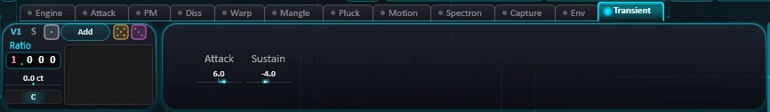
L'ultimo stadio di ogni voce, dopo il suo inviluppo e il suo strato Attack: un compressore, poi due controlli che alzano o domano il colpo di ogni nota e ciò che risuona dopo. Attack e Sustain non hanno soglia: seguono la forma del suono, non il suo livello, e agiscono allo stesso modo su una voce piano o forte.
| Controllo | Cosa fa |
|---|---|
| Attack | Il colpo, ±12 dB: un inviluppo rapido contro uno lento. In negativo doma una percussione che sporge dal mix; in positivo dà più mordente a un suono morbido. |
| Sustain | Ciò che risuona dopo il colpo, ±12 dB, mentre il suono decade: in negativo stringe, in positivo allunga la coda. |
| Comp | Comprime questa voce prima di Attack e Sustain: una sola manopola abbassa la soglia e alza il rapporto. Abbassa solo ciò che supera: riporta il livello con Gain. 0 = spento. |
| Atk | Quanto rapidamente il Comp afferra il livello, da 0,05 a 50 ms. Breve: afferra i picchi e il colpo viene domato. Da 5 ms in su: il colpo passa prima, poi il corpo viene tenuto basso, per più mordente. |
| Rel | Quanto rapidamente il livello ritorna, da 20 a 1500 ms. Breve: si riprende tra i picchi. Da 500 ms in su: ritorna lentamente tra i colpi, il pompaggio. |
| Gain | Riporta il livello dopo il Comp, fino a +24 dB. Solo con Comp acceso. |
| Peak, Pump | Due punti di partenza per il Comp. Impostano Atk e Rel e nient'altro; regolali poi. Peak (0,05 ms / 50 ms) doma i picchi; Pump (5 ms / 500 ms) lascia passare il colpo e tiene il corpo. |
Con Attack, Sustain e Comp a 0 la voce passa inalterata. Lo strato Attack in Post attraversa lo stadio con la voce.
9. Global e Sub
Global
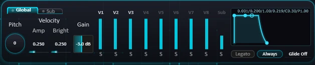
| Controllo | Cosa fa |
|---|---|
| Pitch | Traspone l'intero synth, ±48 semitoni. Si somma al pitch bend. |
| Velocity Amp | La velocity determina il livello (letta all'attacco: nessun effetto sulle note in legato). |
| Velocity Bright | La velocity schiarisce lo spettro: più forte = più energia nelle parziali alte, con il livello invariato. |
| Gain | Il livello delle voci e del Sub verso gli effetti. Con Dist, un filtro con drive o Warmth cambia il suono. Unità a metà corsa, +12 dB al massimo. |
| Fader V1-V8, Sub | Il livello di ogni voce e del Sub. Clicca il numero di una voce o il nome del Sub per silenziarli (in grigio quando sono silenziati); le cuffie sotto un fader = solo. |
| Envelope | L'inviluppo master: un unico inviluppo sull'intera somma di voci e Sub, prima degli effetti (le code di riverbero e delay gli sopravvivono). Neutro per impostazione predefinita. Come sulle voci, il punto di Attack si sposta anche in verticale: il picco che l'attacco raggiunge (Peak). |
| Legato | On: una nota suonata mentre un'altra è tenuta cambia solo l'altezza; gli inviluppi non ripartono. |
| Always / Legato only | Quando scivola il glide: a ogni nota, o solo su una nota suonata mentre un'altra è tenuta. |
| Glide | Ogni nuova nota scivola dall'altezza precedente in questo tempo (fino a 2 s). Off: salta. |
Sub
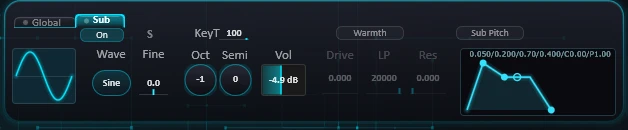
Un oscillatore sotto la nota, con il proprio circuito, al di fuori delle otto voci.
| Controllo | Cosa fa |
|---|---|
| On | Accende o spegne il Sub (cliccare il nome del suo fader fa lo stesso). |
| Wave (grafico) | Sine, Triangle, Pulse o Sawtooth. Trascina il grafico lateralmente per cambiarla. |
| Oct, Semi, Fine | Ottava sotto la nota (da 0 a -3), trasposizione (±48 semitoni oltre a Oct), intonazione fine in cent. |
| KeyT | 100: segue la nota. 0: resta vicino al C4. |
| Vol | Livello del Sub. |
| Warmth | Accende il circuito del Sub: un drive, poi un passa-basso a 24 dB/ott. Neutro finché non giri un'impostazione. |
| Drive, LP, Res | Saturazione (nessun effetto su Pulse), passa-basso da 30 Hz a 20 kHz, risonanza. |
| Envelope / Sub Pitch | L'inviluppo d'ampiezza del Sub; Sub Pitch mostra invece il suo inviluppo di altezza, con il suo on/off e Link; come sulle voci, il suo punto di partenza è l'Amount. Come sulle voci, il punto di Attack si sposta anche in verticale: il picco che l'attacco raggiunge (Peak). |
10. EQ's/Filters
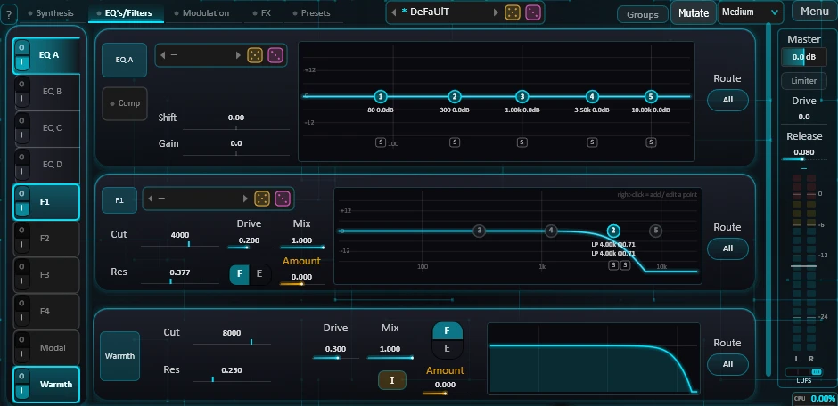
Quattro EQ (A-D), quattro filtri (F1-F4), Modal e Warmth. La barra a sinistra mostra una pagina; l'interruttore su ogni pulsante della barra accende o spegne quello stadio (accenderlo apre anche la sua pagina). Spento: nulla viene calcolato.
Trascina un pulsante della barra in alto o in basso per cambiare l'ordine: il suono attraversa questi dieci moduli nell'ordine dell'elenco, ovunque siano instradati (un solo ordine per le voci, i gruppi, Voices e All). L'ordine predefinito è EQ A-D, F1-F4, Warmth, Modal. L'ordine viene salvato con il preset.
Route
Ogni stadio di questa scheda ha un Route:
- All: le voci e il Sub insieme, dopo il Crush.
- Voices: tutte e otto le voci ma non il Sub, all'interno delle voci (prima del Crush).
- V1-V8: solo all'interno di quella voce, prima del suo volume e del suo inviluppo.
- Group A, B, C: la somma delle voci di quel gruppo, dopo il loro volume e il loro inviluppo, prima di Voices e del Crush.
Il Route apre un menu con tutte le sue scelte (All, Voices — Group A, B, C — da V1 a V8), con quella attuale spuntata.
Routing
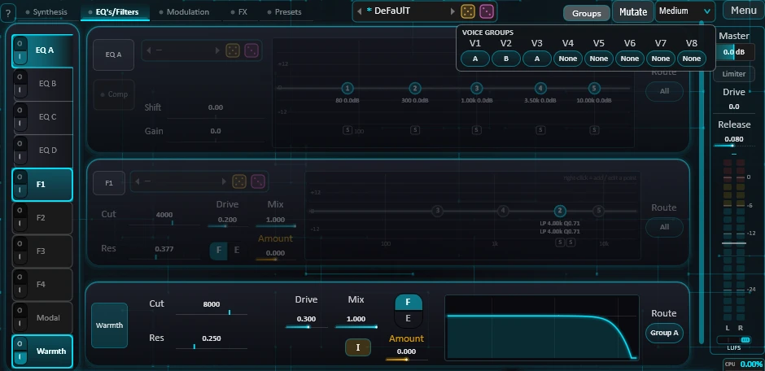
Il pulsante Routing (scheda EQ's/Filters, a destra della lista dei preset) apre la matrice ROUTING: una riga per modulo, nell'ordine della barra, e una colonna per ogni posto che può trattare (All, Voices, A, B, C, V1-V8). Un punto mostra dove va ogni modulo. Clicca una cella per instradarvi il modulo: è la stessa impostazione del Route sulla sua pagina. Una riga attenuata è un modulo spento; può comunque essere instradato.
Gruppi di voci
Sotto la matrice, il riquadro VOICE GROUPS: una casella per voce, None, A, B o C (clicca per passare alla successiva). Una voce appartiene al massimo a un gruppo. Uno stadio instradato verso Group A tratta insieme le voci di A, una volta sola, invece che una volta per voce: per esempio V1 + V3 + V4 in un filtro, V2 in un altro, V5 intatta. Un gruppo che nessuno stadio ha come destinazione non esiste: le sue voci proseguono come se non avessero gruppo. I gruppi vengono salvati con il preset.
EQ A-D
Cinque bande ciascuno: Bell, Low Shelf, High Shelf, High Pass, Low Pass o Notch.
| Controllo | Cosa fa |
|---|---|
| Grafico | Trascina una banda: in orizzontale = frequenza, in verticale = guadagno (Q per High Pass, Low Pass e Notch). Rotella su una Bell o uno shelf: il suo Q. Doppio clic: banda on/off. Clic destro: il suo tipo. Ctrl: passi fini. Dietro la curva: lo spettro all'uscita dell'EQ. La scala finisce a -24 dB, il minimo che una banda può raggiungere. Sotto, una cuffia per ogni banda accesa: cliccala per ascoltare solo la zona di quella banda, clicca di nuovo per smettere. Le frequenze sono in fondo. |
| Banco | Curve di EQ condivise da tutti gli EQ, ordinate nel suo menu per famiglia (Basic, Presets). Dado d'oro: una curva del banco; rosa: una nuova curva (da 2 a 5 bande, ±12 dB). |
| Shift | Sposta tutte le bande insieme, ±4 ottave: fa scorrere l'intera curva. |
| Gain | Aggiunge questo guadagno a ogni banda che ne ha uno. |
| Auto | Guadagno automatico: compensa il livello medio della curva (fino a ±12 dB). |
F1-F4
Ogni filtro è una catena fino a cinque punti in serie: Bell, Low Shelf, High Shelf, High Pass, Low Pass, Notch, Allpass o Band Pass.
| Controllo | Cosa fa |
|---|---|
| Grafico | Trascina un punto: in orizzontale = frequenza, in verticale = guadagno (Bell, shelf) o Q. Rotella su una Bell o uno shelf: il suo Q. Doppio clic: punto on/off. Clic destro: aggiungi un punto, cambiane il tipo o eliminalo. Ctrl: passi fini. Dietro la curva: lo spettro all'uscita del filtro. La scala finisce a -24 dB, il minimo che un punto può raggiungere. Sotto, una cuffia per ogni punto acceso: cliccala per ascoltare solo la zona di quel punto, clicca di nuovo per smettere. Le frequenze sono in fondo. |
| F / E | Mostra nello stesso spazio la curva del filtro (F) o il suo inviluppo (E). |
| Cut, Res | Frequenza di taglio e risonanza del punto principale (il primo attivo); gli altri punti seguono: tutta la curva si sposta. |
| Drive | Saturazione all'ingresso e all'interno della risonanza di ogni punto, con livello compensato. |
| Mix | 0: non filtrato. 1: completamente filtrato. |
| Amount | Di quanto l'inviluppo sposta la curva: ±1 = ±6 ottave. |
| Banco | Filtri condivisi da tutti i filtri, ordinati nel suo menu per famiglia (Basic, Presets). Dado d'oro: un filtro del banco; rosa: uno nuovo (da 1 a 3 punti). |
Modal
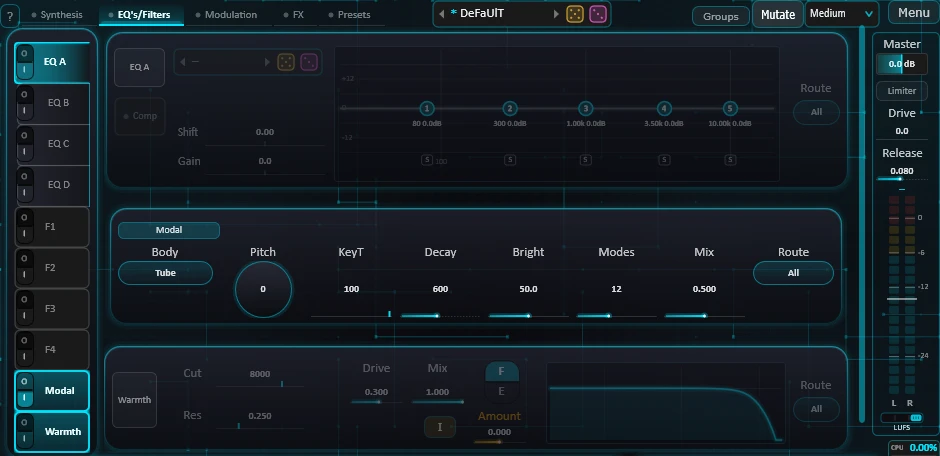
Il suono risuona attraverso i modi di un corpo percosso accordato sulla nota.
| Controllo | Cosa fa |
|---|---|
| Body | Tube (quasi armonico), Bell, Bar, Membrane, Plate -- le stesse leggi del motore Impact. |
| Pitch, KeyT | Accorda il corpo lontano dalla nota (±24 semitoni); quanto segue la nota. |
| Decay | Quanto a lungo risuona, da 20 ms a 8 s. |
| Bright | Peso dei modi alti: 0 = scuro, 100 = tutti uguali. |
| Modes | Quanti modi risuonano, da 4 a 24. |
| Mix | 0: senza Modal. 1: solo il corpo risonante, riportato al livello dell'ingresso. |
Warmth
Un passa-basso morbido a 24 dB/ott che scalda il suono: Cut (da 40 Hz a 20 kHz), Res, Drive, Mix, il suo inviluppo (F / E e Amount), e Init (tutte le impostazioni tornano ai valori predefiniti; il suo on/off e il Route restano).
11. La barra degli FX
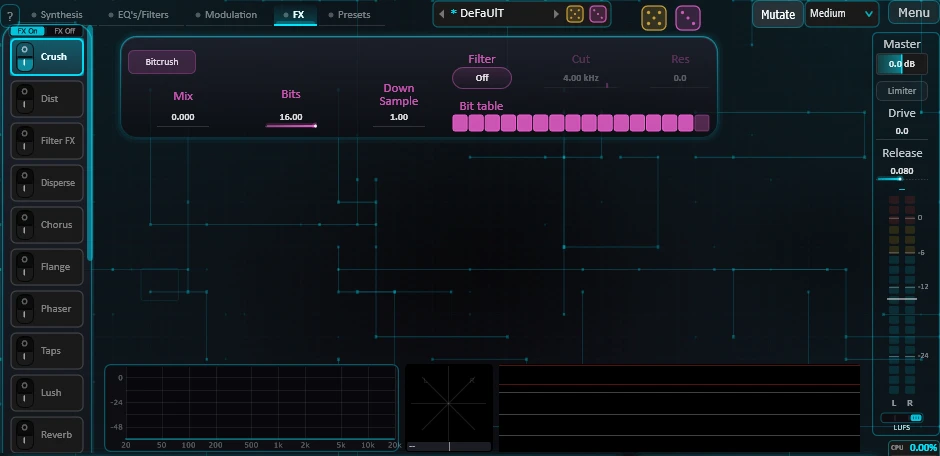
La scheda FX elenca gli effetti nella sua barra. Clicca un pulsante per mostrare la pagina di quell'effetto; l'icona alla sua sinistra è il suo interruttore e lo accende o lo spegne (accenderlo apre anche la pagina). Trascina un pulsante in alto o in basso per cambiare l'ordine: il suono attraversa gli effetti nell'ordine dell'elenco. Due posizioni speciali: in cima all'elenco, Dist viene prima del Warmth; in fondo, Sidechain viene dopo Spatial, subito prima di Dynamics.
FX On / FX Off silenzia tutti gli effetti insieme, per confrontare con e senza (Spatial, Dynamics e il Limiter continuano a funzionare). Non viene salvato con il preset.
Sotto le pagine, il monitor di uscita: lo spettro di ciò che esce da Comma (con il tetto del Limiter, che puoi trascinare), un oscilloscopio stereo con la sua barra di correlazione (verde sopra 0,5, ambra sopra 0, rossa sotto), e uno spettrografo con la forma d'onda sovrapposta.
Il Crush è sempre il primo; l'ordine predefinito degli altri è: Dist, Filter FX, Disperse, Chorus, Flange, Phaser, Taps, Lush, Reverb, Cloud, Delay, Prism, EQ Fx A, EQ Fx B, Sidechain.
Il Mix degli effetti di tempo e di spazio (Disperse, Chorus, Flange, Phaser, Taps, Lush, Reverb, Cloud, Delay, Prism) dedica la maggior parte della sua corsa alle piccole dosi: 0,1 sta a metà della manopola, 0,5 a circa quattro quinti. Un po' di riverbero è facile da impostare.
Caselle Band. Band riunisce un passa-alto e un passa-basso in una sola casella, da 20 Hz a 20 kHz, e mostra la parte che conserva. Trascina un bordo per spostarlo; trascina il centro per spostarli entrambi (un bordo su Off resta lì e si muove solo l'altro); la rotella sposta il bordo più vicino; il doppio clic li apre entrambi. Un Mod rilasciato sulla metà sinistra punta all'HP, sulla metà destra all'LP.
Caselle doppie. Su Flange, Phaser, Delay e Prism, il valore di nota e il valore libero condividono una casella: clicca la sua etichetta per passare da Div (in valori di nota del tempo dell'host) a Rate o Time. Ognuno conserva il proprio valore.
Crush
| Controllo | Cosa fa |
|---|---|
| Bitcrush | On / off. |
| Bits | Profondità in bit, da 16 fino a 1. |
| Down Sample | Mantiene ogni campione per questo numero di campioni (da 1 a 50, frazioni ammesse): aliasing, un anello lo-fi. |
| Mix | Da asciutto a completamente "crushato". |
| Band, Res | Passa-alto e passa-basso sul suono "crushato", prima del Mix: avvicinali per ottenere un passa-banda. Off alle estremità. Res: la risonanza di entrambi i bordi, da dolce a molto stretta. |
| Tabella dei bit | I 16 bit, il più significativo a sinistra: clicca una cella per forzare quel bit a zero (trascina per dipingere). |
Dist
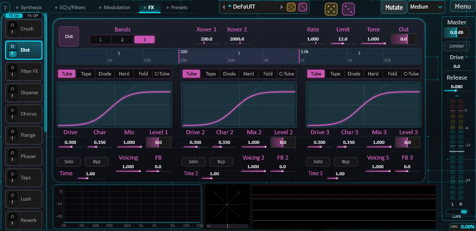
| Controllo | Cosa fa |
|---|---|
| Init | Tutte le impostazioni del Dist tornano ai valori predefiniti. Il suo on / off resta. |
| Bands, Xover 1-2 | 1, 2 o 3 bande, ciascuna con il proprio circuito; i crossover (trascinabili anche sul grafico delle bande). |
| Riga dei circuiti | Tube, Tape, Diode, Hard, Fold -- o Custom: la curva che disegni sul grafico della banda (disegnare trasforma il circuito in Custom). |
| Drive, Char | Quanto viene spinta la banda (fino a circa +30 dB); Char trasforma il circuito da morbido a duro. |
| Color | Quanto del colore proprio del circuito (i suoi filtri e il suo bias) circonda la curva: 0 = la curva nuda, 1 = il circuito completo. Debole su Tube, forte su Diode e Fold. |
| Mix, Level | Per banda: da asciutto a effettato, e il suo livello dopo il circuito. |
| FB, Time | Rimanda l'uscita della banda nella sua curva dopo Time (da 0,1 a 50 ms): un colore, poi un pettine metallico. Valori alti possono fischiare. |
| Cuffie, Byp | Ascolta solo questa banda; lasciala passare intatta. |
| Tone | Passa-basso dopo i circuiti. |
| Recovery: Speed, Limit | La compensazione di livello mantiene il Dist forte quanto il suono asciutto. Speed: quanto rapidamente segue, da 0,05 a 5 s (breve = un compressore veloce; lunga = il punch resta e la coda si gonfia). Limit: quanto può correggere, da 0 a 24 dB (0 = niente). |
| Out | Livello di uscita. |
Filter FX
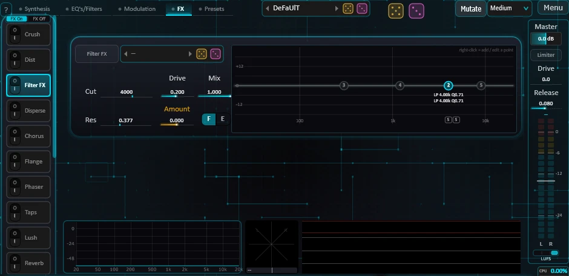
Lo stesso filtro di F1-F4, collocato nella barra. Il suo inviluppo è quello di F1, con un proprio Amount.
Disperse
Una lunga catena di filtri passa-tutto accordati su una frequenza: ogni transiente viene stirato in un "piou".
| Controllo | Cosa fa |
|---|---|
| Freq | Dove avviene il piou, da 100 Hz a 5 kHz. |
| Time | Durata del piou a Freq, da 5 a 150 ms. |
| Q | Basso = ampio e morbido, alto = stretto e risonante. |
| Mix | 1: solo il suono disperso. Più basso: miscelato con il suono asciutto (nel mezzo diventa un phaser). |
Chorus
Otto voci brevi che respirano insieme, mai in sincronia. Rate (da 0,02 a 8 Hz), Depth, Width (apertura delle voci), FB (da un chorus pulito a un flanger risonante), Mix, e Band sulle sole voci del chorus (le basse frequenze restano asciutte e al centro).
Flange e Phaser
Il Flanger fa scorrere un breve ritardo aggiunto al suono asciutto (il "jet"); il Phaser fa scorrere una catena di filtri passa-tutto (tacche più fini e più rotonde).
| Controllo | Cosa fa |
|---|---|
| Rate / Div | Velocità dello sweep (da 0,02 a 10 Hz), o in valori di nota del tempo dell'host: clicca l'etichetta per passare dall'uno all'altro. |
| Shape | Sine, Random (una nuova profondità a ogni ciclo) o Triangle. |
| Depth | Quanto è ampio lo sweep (fino a due ottave per lato). 0: tacche ferme. |
| Manual | Centro dello sweep (Flange: da 0,1 a 10 ms di ritardo; Phaser: da 40 Hz a 6,3 kHz). |
| FB | Tacche più profonde; negativo: l'altro colore. |
| Stereo | Sfasamento del canale destro: 0 = mono, 1 = opposto. |
| Mix | 0,5 = le tacche più profonde. Il livello resta lo stesso. |
| Band | Filtra solo l'effetto: fuori dalla banda il suono resta asciutto. |
| TZ (Flange) | Through-zero: il suono asciutto è ritardato di 2 ms, così lo sweep passa prima e dopo di esso (il jet del flanger a nastro). Richiede Manual attorno ai 2 ms. |
| Stages (Phaser) | 4, 8 o 12 stadi: 2, 4 o 6 tacche. |
Taps
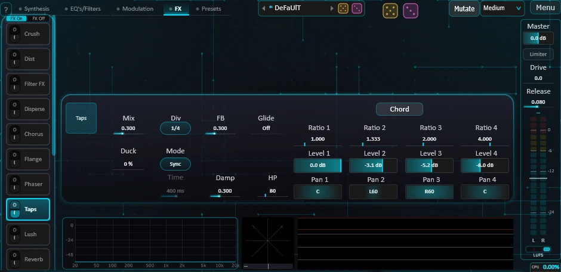
Quattro prese (tap) su una linea di ritardo: un ritmo in Sync o in ms, un risonatore accordato in Key. I suoi echi proseguono negli effetti che seguono.
| Controllo | Cosa fa |
|---|---|
| Mode | Sync (Div del tempo), ms (Time), Key (il tempo di base è un periodo della nota: ogni tap diventa un pettine accordato). Div e Time condividono una casella, scelta dalla modalità. |
| Glide | Come i tap raggiungono un nuovo tempo: subito (Off), o scivolando (gli echi si piegano; in Key, la risonanza scivola). |
| Ratio 1-4 | Ogni tap suona al tempo di base diviso per il suo rapporto. In Key, il rapporto è l'altezza del tap rispetto alla nota. |
| Chord | Copia i rapporti di V1-V4 nei quattro tap: in Key, i tap fanno risuonare il tuo accordo. |
| Level, Pan 1-4 | Per tap. |
| FB, Damp | Feedback di ogni tap (da pochi echi a una lunga risonanza); scurimento all'interno del loop. |
| Band | Passa-alto e passa-basso sui tap che senti (12 dB/ott), fuori dal feedback. Off: intatti. |
| Mix, Duck | Da asciutto ai soli tap; Duck abbassa i tap mentre una nota è tenuta. |
Lush
Un delay diffuso che si trasforma in una coda rigogliosa. Decay (tempo del primo stadio: breve = una stanza densa, lungo = rigonfiamenti distinti), FB (lunghezza della coda), Motion (quanto respira; -1 = congelato), Material (dal legno sordo al vetro), Out Band (colore dell'uscita), Pitch (ogni passaggio si sposta di questo intervallo: una cascata), Shift (ogni passaggio sposta lo spettro di alcuni Hz), Glide, Mix.
Reverb
Mix, Decay, Room (da piccola e vicina ad ampia), Diff (0: l'attacco resta netto; 1: completamente levigato), Band all'interno della vasca, Shimmer (una copia trasposta reimmessa: una cascata), Shim Pitch (+12 = la classica ottava sopra), Shim Damp (apre i filtri della vasca per il solo shimmer), Freeze (mantiene la coda quasi all'infinito).
Cloud
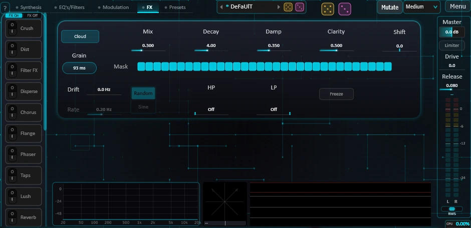
Un riverbero spettrale, lungo fino a un minuto senza diventare metallico.
| Controllo | Cosa fa |
|---|---|
| Decay, Damp | Durata (da 0,2 a 60 s); quanto più in fretta si spengono gli acuti. |
| Clarity | 0: una nuvola rumorosa e diffusa. 1: ogni banda mantiene la sua fase e canta. |
| Shift | Sposta l'intera nuvola di alcuni Hz: un colore metallico. |
| Drift, Rate, modalità | Lascia vagare Shift da solo (Sine o Random). |
| Sparkle, Density, Length | Scintille accese a caso nelle bande della nuvola. Sparkle: quanto brillano (0 = spento). Density: quante al secondo su tutto lo spettro, da 1 a 2000; cadono a sinistra e a destra separatamente. Length: quanto dura la dissolvenza di ciascuna, da 10 a 1000 ms: breve = bagliori, lungo = un luccichio che indugia. |
| Mask | 32 zone di frequenza (da 40 Hz a 16 kHz): clicca una cella per togliere quella zona dalla nuvola. Clic sull'etichetta Mask: tutte le zone ritornano. |
| Grain | Dimensione delle fette di analisi: 93 ms è più compatto, più lungo è più morbido e più ritardato. |
| Band | Passa-alto e passa-basso sulla nuvola che senti (12 dB/ott), fuori dalla sua memoria. Off: intatta. |
| Freeze, Mix | Congela la nuvola; da asciutto a effettato. |
Delay
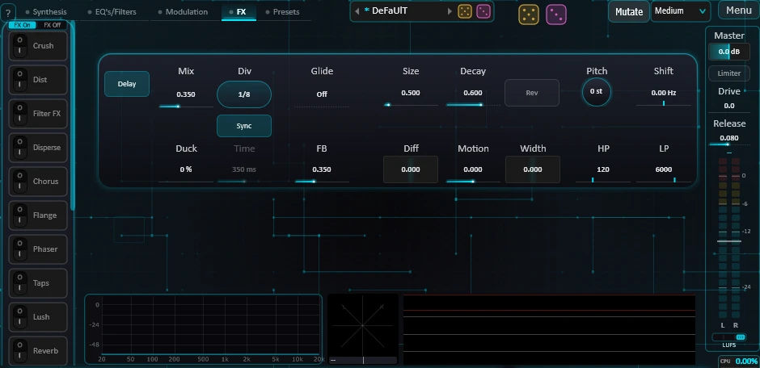
| Controllo | Cosa fa |
|---|---|
| Div / Time | Il tempo segue il tempo dell'host, oppure si imposta in ms (da 1 a 2500): clicca l'etichetta per passare dall'uno all'altro. |
| Rev | Le ripetizioni suonano all'indietro, a fette lunghe quanto il tempo di ritardo. |
| FB, Mix, Width | Feedback (i filtri del loop fanno spegnere anche la parte alta), da asciutto a effettato, da diretto a ping-pong. |
| Diff, Size, Motion, Decay | Sfoca le ripetizioni attraverso quattro stadi passa-tutto: da un'eco pulita a una nuvola; dimensione, movimento e risonanza della sfocatura. |
| Pitch, Shift | Ogni ripetizione si sposta di un intervallo, o sposta il suo spettro di alcuni Hz. |
| Glide | Off: una rapida dissolvenza incrociata verso un nuovo tempo. Sopra: il tempo scivola e le ripetizioni si piegano. |
| Band | Passa-alto e passa-basso sugli echi udibili (12 dB/ott) e all'interno del loop: ogni ripetizione perde un po' di più. Off: nulla cambia. |
| Duck | Abbassa gli echi mentre una nota è tenuta. |
Prism
Un delay spettrale: il suono è diviso in circa mille bande, ciascuna con il proprio ritardo.
| Controllo | Cosa fa |
|---|---|
| Div / Time | Tempo di ritardo in valori di nota del tempo, o da 50 a 2500 ms (mai sotto circa 48 ms: l'analisi spettrale richiede almeno quel tempo): clicca l'etichetta per passare dall'uno all'altro. Time può essere modulato; gli echi seguono allora Glide. |
| Stretch | Stira ogni eco lungo lo spettro (il "piou"): a +1 gli acuti arrivano fino a un tempo di ritardo dopo i bassi; negativo: i bassi arrivano per ultimi. |
| Pitch | Ogni ripetizione viene trasposta, sommandosi da un'eco all'altra. I centesimi danno una deriva lenta. |
| FB, Damp | Quante ripetizioni; gli acuti si attenuano più in fretta a ogni passaggio. |
| Rev, Glide, Mix | Echi all'indietro; come cambia il tempo; da asciutto a effettato (a potenza costante). |
| Duck | Abbassa gli echi mentre una nota è tenuta; tornano quando la rilasci. 0 = nessun abbassamento. |
| Band | Passa-alto e passa-basso sugli echi udibili (12 dB/ott), fuori dal feedback: Damp scurisce ogni passaggio, questi modellano l'intero eco. Off: nulla cambia. |
EQ Fx A e B
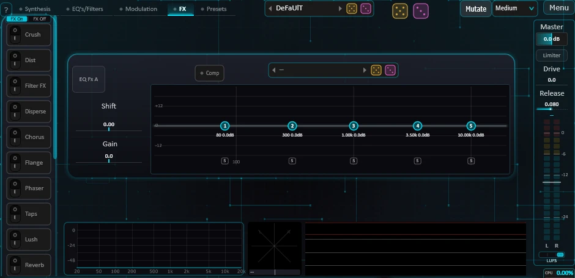
Altri due EQ, identici a EQ A-D, collocati nella barra.
Sidechain
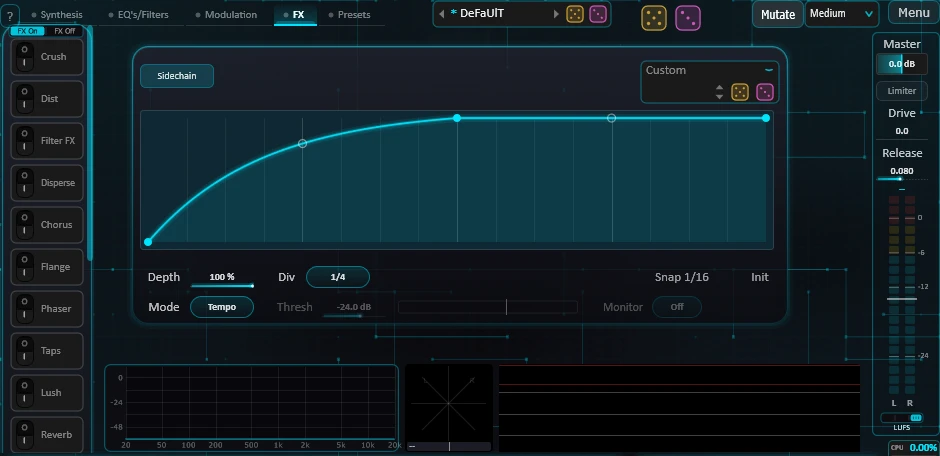
Il livello si abbassa a ogni battito, seguendo una forma che disegni.
| Controllo | Cosa fa |
|---|---|
| Grafico | L'abbassamento su un ciclo, dal silenzio (in basso) all'intatto (in alto). Clic: aggiungi un punto; trascina; l'anello curva un segmento; doppio clic: elimina. La linea bianca mostra il punto del ciclo. |
| Banco | Forme di Sidechain (ognuna porta con sé il suo Div). Dado d'oro: una forma del banco; rosa: un ritmo casuale su 16 passi. |
| Snap | Clic: Off, 1/4, 1/8, 1/16, 1/32 -- il magnete per i punti. |
| Depth | 0 = nessun abbassamento, 100 % = la forma disegnata per intero. |
| Div | Durata di un ciclo (1/4 = un abbassamento per battito). In modalità Input: quanto dura l'abbassamento. |
| Mode | Tempo: si ripete da solo. Input: suona una volta ogni volta che l'ingresso Sidechain del plugin supera Thresh. |
| Thresh, Monitor | Modalità Input: il livello di attivazione (la barra mostra ciò che sente il rilevatore, ambra quando lo supera; clicca o trascinala per impostare Thresh, doppio clic per il valore predefinito) e l'ascolto dell'ingresso. |
| Attack, Release | Modalità Input, solo il rilevatore: quanto rapidamente sale (da 0 a 100 ms; 0 afferra ogni picco, più lungo ignora i clic brevi) e ricade (da 5 ms a 1 s; breve: i colpi rapidi fanno partire ciascuno l'abbassamento; lungo: colpi ravvicinati contano come uno solo). |
| Band | Modalità Input: le frequenze che il rilevatore sente; restringila per far partire l'abbassamento solo sulla cassa. Il suono che ascolti in monitor non cambia. |
| Init | Torna all'abbassamento iniziale. |
Spatial
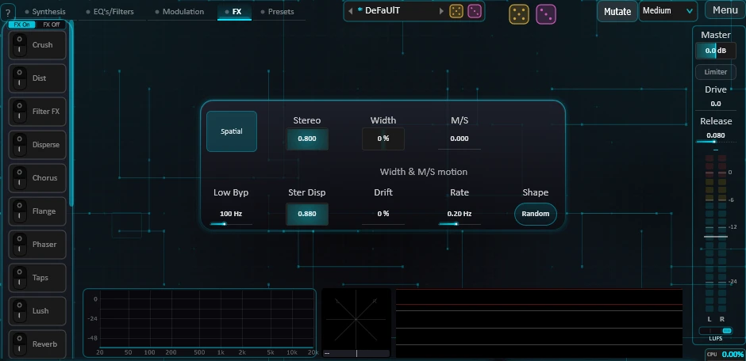
L'immagine stereo delle voci. Il suo pulsante si trova verso la fine della barra, ma Spatial agisce sulle voci subito dopo il Crush, prima degli effetti.
| Controllo | Cosa fa |
|---|---|
| Spatial | On / off. Off: tutte le voci stanno al centro. |
| Stereo | Apre o restringe i pan di tutte le voci: 0 = al centro, 1 = come indica ogni Pan. |
| Ster Disp | Dà a ogni parziale una fase leggermente diversa a sinistra e a destra: un'immagine più ampia; la somma mono non si annulla mai. |
| Low Byp | Sotto questa frequenza le voci tornano al centro. |
| Width | Ogni lato scivola verso una propria copia rimescolata: molto ampio al 100 %; la somma mono si assottiglia. |
| M/S | Una copia rimescolata del centro aggiunta a sinistra e sottratta a destra: la somma mono conserva l'originale. |
| Width & M/S motion: le tre impostazioni sotto questo titolo muovono il rimescolamento di Width e M/S, e nient'altro. | |
| Drift | L'immagine di Width e M/S deriva lentamente, banda per banda: il suono oscilla dolcemente tra sinistra e destra (ottimo sulle percussioni e sui suoni brevi). Gli attacchi restano puliti. 0 = fermo. |
| Rate | Velocità di Drift, da 0,05 a 2 Hz. Veloce e con un Drift ampio, comincia a suonare come un chorus. |
| Shape | Sine: onde morbide e regolari. Random: ogni onda scivola verso un nuovo valore estratto a caso. |
Dynamics
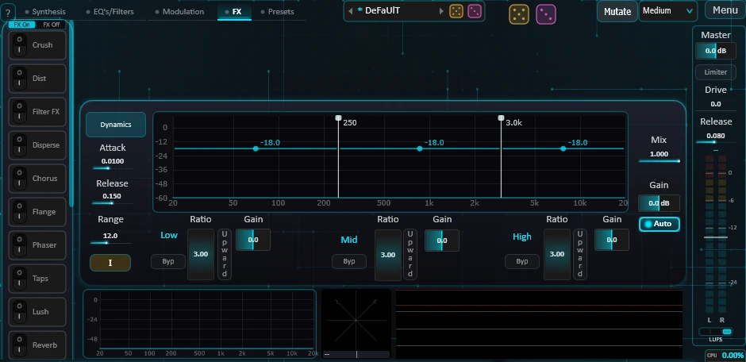
Un compressore a tre bande, sempre verso la fine della catena. Soglie (da -60 a +12 dB) e crossover si impostano sul suo grafico, che mostra lo spettro in ingresso.
| Controllo | Cosa fa |
|---|---|
| Ratio (Low, Mid, High) | 1 = nessuna compressione, 20 = quasi un limiter. |
| Gain (per banda) | Da -24 a +24 dB dopo la compressione. |
| Upward | La banda solleva anche ciò che resta sotto la sua soglia (limitato da Range). |
| Cuffie | Ascolta solo questa banda (anche la parte asciutta di Mix viene silenziata). |
| Byp | La banda passa intatta. |
| Attack, Release | Da 0,1 a 250 ms; da 5 ms a 1,5 s. |
| Mix, Gain | Compressione parallela; guadagno di uscita. |
| Range | Il massimo di cui una banda Upward può alzare le parti deboli (da 0 a 30 dB). |
| Auto | Riporta il suono compresso al livello del suono asciutto (±12 dB). |
| Init | Tutte le impostazioni tornano ai valori predefiniti. Il suo on / off resta. |
12. Uscita: Master, Limiter, misuratore
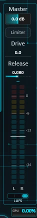
| Controllo | Cosa fa |
|---|---|
| Master | Il volume di uscita, dopo gli effetti e Dynamics. Cambia il livello, non il suono (a meno che il Limiter sia acceso). Unità a metà corsa, +24 dB al massimo. |
| Limiter | Un tetto per i picchi, l'ultimo stadio. Il suo tetto è la linea tratteggiata ambra sul misuratore: trascinala o fai doppio clic per digitarlo. Ciò che toglie compare come una barra ambra. |
| Drive | Spinge il livello verso il tetto (da 0 a 24 dB). |
| Release | Quanto rapidamente rilascia (da 5 ms a 1 s). Guarda 1 ms in anticipo. |
| Misuratore, Peak / RMS / LUFS | Peak: il picco più alto (clicca il misuratore per azzerarlo). RMS: la media su 300 ms (linea bianca: -20 dB). LUFS: la loudness degli ultimi 3 s (BS.1770, come la sente l'orecchio); la linea bianca segna -17, il livello dei preset. Tieni una nota 3 s per leggerla. |
| CPU | Il carico di elaborazione. Ambra sopra il 50 %, rosso sopra l'80 %. |
Uno stadio di sicurezza dopo tutto il resto mantiene l'uscita sotto 0 dBFS.
13. Modulazione
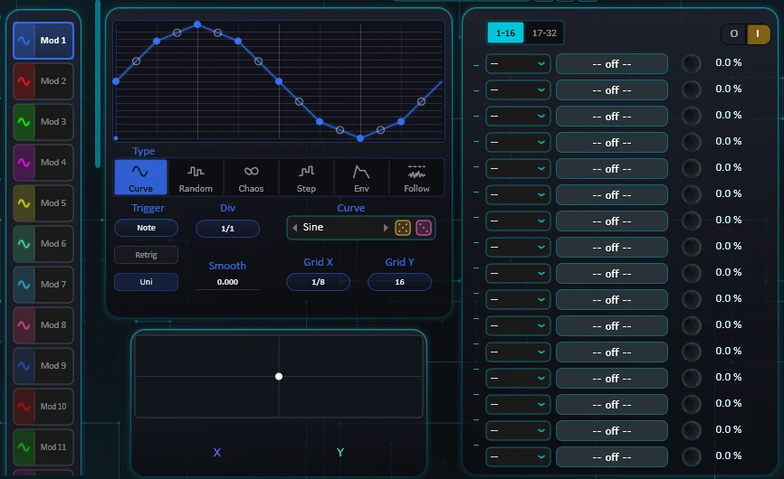
Il modo più rapido: trascina e rilascia
Trascina un qualsiasi pulsante Mod (la barra a sinistra della scheda Modulation, o le scorciatoie Mod in basso a destra delle altre schede), un'etichetta di macro (M1-M8) o un'etichetta XY su un controllo. Durante il trascinamento, passare sopra una scheda o un pulsante di pagina la apre; il controllo sotto il cursore si illumina. Al rilascio viene creato un collegamento al 100 %.
Un controllo modulato mostra un arco bianco (la portata dei suoi collegamenti) e un punto colorato per ogni sorgente. Per cambiare la quantità, fai clic destro sul controllo: Amount ±10 %, Invert sign, Set amount..., Remove link. Passa il mouse su un pulsante Mod, una macro o un'etichetta XY per vedere tutto ciò che muove.
Le 32 sorgenti
Clicca un Mod nella barra per mostrarlo; la casellina all'inizio del suo pulsante mostra l'icona del suo tipo e lo accende o lo spegne. Clic destro: copia / incolla una sorgente, o copiala su tutte le altre. Il selettore del tipo, con le stesse icone, sceglie il tipo; la pagina mostra allora solo le impostazioni di quel tipo.
| Tipo | Cos'è |
|---|---|
| Curve | Una forma che disegni, in loop. Clicca per aggiungere un punto, trascina per spostarlo, trascina l'anello per curvare, doppio clic per eliminare; Grid X e Grid Y (anche con il clic destro) dicono dove si agganciano i punti. Grid X: i tempi del ciclo in Sync (1/8, 1/16 di default, 1/32, 1/64: passi più fini su un ciclo breve), Off, o da 2 a 32 parti uguali; Grid Y: Off, o da 2 a 32 livelli. Un banco di curve con dadi d'oro e rosa. |
| Random | Un nuovo valore a ogni ciclo (Smooth lo trasforma in uno scorrimento continuo). |
| Chaos | Un sistema caotico usato come LFO: System (Rossler, Lorenz, Duffing, Logistic) e Chaos (da quasi periodico a completamente caotico). |
| Step | Un sequencer da 1 a 16 passi (clicca o trascina sul grafico). Quant (Free, 12, 24 livelli), il numero di passi (riempiono sempre l'intero ciclo), Join (Hold, Lin, Curve), l'ordine di lettura (Forward, Backward, Ping-pong: andata e ritorno, Random), Init, e dadi (oro: una frase suonabile; rosa: tutto). |
| Env | Un inviluppo avviato da ogni nota, disegnato sul suo grafico (Smooth: la curva dei suoi segmenti). |
| Follow | Segue il livello dell'ingresso Sidechain (0 nel silenzio, 1 a fondo scala). Gain sull'ingresso prima della misura (da -24 a +24 dB), e Band, i cui due bordi sono un passa-alto e un passa-basso solo su ciò che viene misurato (per esempio: solo la cassa, solo gli hi-hat). Attack e Release sul suo grafico; Smooth: la curva del suo valore. |
Impostazioni comuni: Rate (da 0,02 a 20 Hz) o Div (valori di nota del tempo dell'host): clicca l'etichetta per passare dall'uno all'altro, ognuno conserva il proprio valore. Smooth, Retrig (ripartenza a ogni nota), Uni (da 0 verso l'alto invece che attorno a 0), Trigger. Un Env non ha ciclo: i suoi Uni, Rate e Div sono pallidi. Un Follow non viene fatto partire da nulla: anche i suoi Retrig e Trigger sono pallidi. Rate, Smooth e Div si possono modulare a loro volta (una macro, un altro Mod): un Div modulato avanza nei valori di nota dal più lento al più veloce, quindi un wobble può solo accelerare.
Trigger indica cosa fa ripartire questa sorgente, oltre a Retrig. Note: solo la nota. Da Mod 1 a Mod 32: ogni passo di quel Mod (ogni ciclo per un Curve, Random o Chaos; un Mod spento, un Env o un Follow non fanno ripartire nulla). Uno Step, Curve, Random o Chaos riprende allora il suo schema dall'inizio. Un Env riparte mentre la nota è tenuta, e la nota continua a farlo partire: per esempio un impulso di filtro a ogni passo di una sequenza Step. Una sorgente fatta ripartire a ogni passo suona solo la parte del suo schema che entra in un passo, quindi dalle una velocità adatta. Un Mod puntato su se stesso non fa nulla, e la sua casella impallidisce.
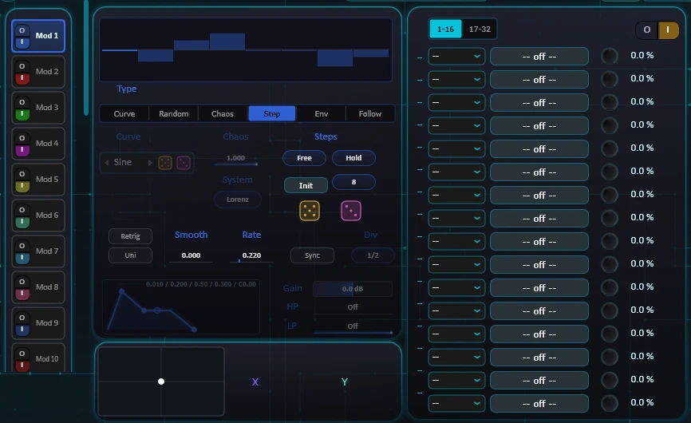
La matrice
32 collegamenti, su due pagine (1-16, 17-32). Ogni collegamento: una sorgente, una destinazione e una quantità (da -100 a +100 %; negativa = nel verso opposto). L'interruttore O / I in alto accende o spegne tutti i collegamenti; le sorgenti continuano a girare.
Sorgenti: Mod 1-32, Macro 1-8, Vel (velocity di ogni nota), Vel Hold (congelata al note-on), Mod Wheel, XY X, XY Y.
Le destinazioni sono raggruppate per sezione nel menu delle destinazioni (Voices, Global, ogni motore, ogni pagina, il Mangle, ogni filtro ed effetto, i mod stessi, le quantità della matrice...). Le destinazioni per voce esistono per V1-V8. Una destinazione usa in genere la parola che leggi sul controllo, scritta per esteso, dopo la sua sezione e la sua voce (Pluck Decay V1); gli elenchi di automazione del tuo host usano le stesse parole.
Quando la sorgente è una macro, un pulsante accanto alla quantità la rende bipolare (centro = zero, spinge in entrambe le direzioni). Questa impostazione appartiene alla macro: tutti i suoi collegamenti la seguono.
Macro
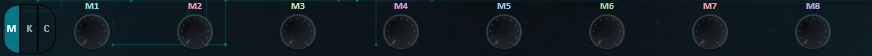
Otto manopole, M1-M8. Trascina l'etichetta di una macro sui controlli per collegarla. Una macro prende il nome della sua prima destinazione; fai doppio clic sull'etichetta per rinominarla (un | forza un a capo). Clic destro sulla manopola: Bipolar, o elimina tutti i suoi collegamenti. Doppio clic sulla manopola: torna a riposo.
Pad XY
Nella scheda Modulation. Trascina il punto: i suoi due assi sono sorgenti. Il centro è la posizione di riposo (lì nulla viene modulato); doppio clic per ricentrare. Le etichette X e Y si possono trascinare sui controlli, prendono il nome di ciò che controllano, si rinominano con un doppio clic, e una sorgente rilasciata su un'etichetta modula quell'asse.
Scorciatoie Mod
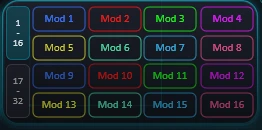
In basso a destra delle schede Synthesis, EQ's/Filters e FX: Mod 1-16 o 17-32 (i due pulsanti a sinistra). Trascinane una su un controllo. Una scorciatoia in uso si illumina; passaci sopra con il mouse per leggerne i collegamenti.
14. Suonare: tastiera, accordi, scala
K -- la tastiera
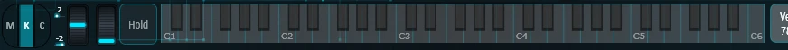
Clicca K in basso a sinistra. La tastiera a schermo suona Comma (anche la tastiera del computer, finché questa fascia è visibile). La rotella del pitch torna al centro da sola; la rotella di modulazione resta dove la lasci (segue il CC1 della tua tastiera MIDI; instradala con la sorgente Mod Wheel). Le due piccole caselle impostano l'estensione del bend verso l'alto e verso il basso (in semitoni).
La tastiera si apre su C1 e scorre da C0 a C8 (C2 = nota MIDI 48, 130,81 Hz, come in Bitwig). Trascina oltre il suo bordo sinistro o destro per farla scorrere, più lontano più veloce; scorre anche con la rotella del mouse. Le frecce alle due estremità si accendono quando ci sono altre note da quella parte: clicca una per saltare di un'ottava. Sulla tastiera del computer, A suona C2, W C#2, S D2... fino a K, C3. Vel 78: acceso, ogni tasto della tastiera a schermo suona a 78,7 % di velocity (il valore predefinito di Bitwig), ovunque clicchi; spento, più in alto clicchi su un tasto, più piano suona. Un controller MIDI mantiene la propria velocity.
Il pulsante verticale Hold tiene la nota: finché è acceso, i rilasci dei tasti (dalla tastiera sullo schermo o dal MIDI) restano in attesa e si applicano quando si spegne; un tasto ancora premuto continua a suonare. Il pedale di sustain (CC64) fa lo stesso finché è premuto, e accende Hold. Hold resta acceso quando passate a M o C: le note continuano a suonare, e K resta acceso.
All Sound Off (CC120) zittisce Comma subito, rilasci e code degli effetti compresi (in 10 ms, senza clic). All Notes Off (CC123) rilascia le note e lascia suonare le code.
C -- la progressione di accordi
Otto passi. Clicca il numero di un passo per attivarlo o disattivarlo, il suo grado per scegliere da I a VII della scala, e sotto per scegliere l'accordo (Major, Minor, Dim, Aug, Sus2, Sus4, 6, m6, 7, Maj7, m7, m7b5, dim7, 9, m9, Maj9, add9, o un preset di rapporti). Con Prog attivo, ogni nota che suoni prende il passo attivo successivo: spostata del suo grado, suonata con il suo accordo. Salvata con il preset.
Scala
Scale in alto: scegli una tonica (da C a B) e una scala (Off, Major, Minor, Harmonic Minor, Dorian, Phrygian, Lydian, Mixolydian, Locrian, Pentatonic Major, Pentatonic Minor, Blues). Ogni nota che suoni si sposta sulla nota più vicina della scala (a parità di distanza scende). Salvata con il preset.
Rec -- registrare l'uscita
Rec, nella colonna di uscita, apre il registratore: un piccolo pannello che resta aperto da una pagina all'altra. Trasforma tutta l'uscita di Comma in un campione, in uno di due modi:
- Last seconds: ciò che hai appena suonato. Keep last seconds lo salva; Length (da 1 a 29 s) indica fin dove risale.
- Next note: Arm, poi suona. La registrazione parte alla tua prossima nota e si ferma quando il suono si è spento (code degli effetti comprese), o a Length. Clicca di nuovo lo stesso pulsante per annullare, o per fermare una registrazione.
Il pulsante Rec è ambra quando è armato, rosso durante la registrazione. Il campione viene rifilato, sfumato e portato a -1 dB, poi gli dai un nome e scegli la sua cartella in Samples (Captures, Kick, Snare, Hat, Clap, Perc, Texture, o una nuova). Folder apre la cartella Samples. Ognuna di queste cartelle è una famiglia nei menu del motore Sample e dello strato Attack.
15. Preset e banchi
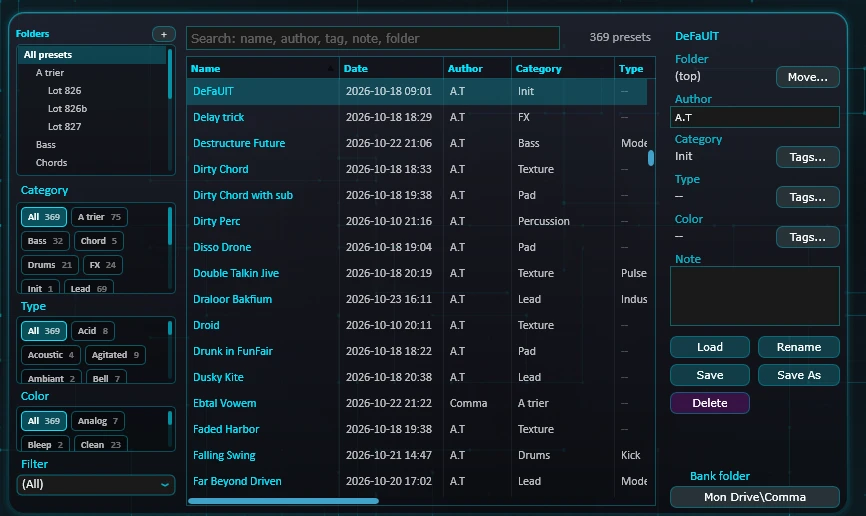
La lista dei preset (barra superiore)
Scegli un preset per caricarlo; le frecce passano al precedente / successivo. Il suo menu contiene anche Save, Save As, Reload, Rename, Delete e Init (Init carica DeFaUlT, il suono con cui Comma si avvia). Un * prima del nome indica che il suono è stato modificato da quando è stato caricato.
Save As parte dal preset caricato, per salvarne delle versioni: il suo nome con una versione in più (Strong Enough diventa Strong Enough v2, poi v3...) e i suoi Category, Type e Color; la nota parte vuota. Da DeFaUlT non viene ripreso nulla.
La lista mostra i preset della cartella scelta nella scheda Presets, con le sue sottocartelle (All presets: tutto il banco); le frecce scorrono questa lista. Un preset caricato da altrove mantiene il suo nome nella casella.
Questo menu ha tre colonne, come i menu degli altri banchi e delle liste ordinate per famiglie (preset di rapporti, preset di EQ e di filtri, wavetable, le liste di Impact, Noise, Sample e Attack). A sinistra, le famiglie, ricavate dalle sottocartelle: un clic cambia la colonna centrale e lascia il menu aperto. Al centro, il contenuto di quella famiglia, con l'elemento attuale evidenziato. A destra, le azioni (Save, Save As, Reload, Rename, Delete, Init su un banco; Open folder sulle wavetable; Samples e Recipes sulle liste che li usano). Puoi creare ed eliminare lì le tue cartelle; quelle di Comma non si possono eliminare. I preset di EQ e di filtri si dividono in due famiglie: Basic, forme semplici, e Presets, i tuoi.
La scheda Presets
- Cartelle: cliccane una per mostrarne i preset (e quelli delle sue sottocartelle). + crea una nuova cartella; clic destro su una cartella per rinominarla o eliminarla (finisce nel Cestino). Trascina un preset dalla lista su una cartella per spostarlo.
- Ricerca: tiene i preset il cui nome, autore, tag, nota o cartella contengono tutte le parole digitate. Alla sua destra, il contatore: quanti preset mostra la lista, su tutto il banco.
- Category, Type e Color: filtri per tag (la famiglia del suono, cosa è in quella famiglia, il carattere del suono: Lead, Bell, Bright). Si sommano. Ognuno mostra quanti preset lo portano (All: tutto il banco). La lista Filter è lo stesso filtro di Category.
- La lista: Name, Date (l'ultima modifica del file), Author, Category, Type, Color, Fav (da 0 a 5 stelle), Note. Clicca una colonna per ordinare; trascina un'intestazione per spostare la colonna (l'ordine viene ricordato).
- La scheda informativa a destra: Folder (Move...), Author e Note (registrati quando premi Invio o esci dal campo), Category, Type e Color Tags... (spunta dei tag, o digitane uno nuovo; clic destro su un tag per rinominarlo, o rimuoverlo, in tutti i preset).
- Load, Save (nel preset caricato), Save As, Rename, Delete (nel Cestino).
Dove si trovano le cose
Tutto ciò che puoi condividere si trova nella cartella del banco, Documents\Comma per impostazione predefinita:
| Cartella | Contenuto |
|---|---|
| Presets | I tuoi suoni, un file XML ciascuno (sottocartelle ammesse). |
| VoicePresets | Preset di rapporti (accordi). |
| EqPresets, F1Presets | Curve di EQ, filtri. |
| CurvePresets, SpectronPresets, SidechainPresets | Curve di modulazione, curve di Spectron, forme di Sidechain. |
| Wavetables | Tabelle per Wave e Shard (e le tabelle create da Capture). |
| Samples | File WAV per Sample, Noise (modalità Sample) e Attack, e ciò che Rec registra. |
Il pulsante Bank folder (scheda Presets) sposta l'intero banco altrove (un disco cloud, un disco esterno), torna a
Documents\Comma, o lo mostra in Esplora risorse. Può anche aggiungere cartelle Wavetables e Samples supplementari. Un preset memorizza i
nomi delle sue tabelle e dei suoi campioni: condividi quei file insieme al preset.
Non salvati con i preset (conservati su questo computer): tema, dimensione della finestra, suggerimenti, modalità del misuratore, FX On/Off, Hold, Vel 78, il tempo dell'applicazione autonoma.
16. I dadi
I dadi compaiono ovunque in Comma. La convenzione è sempre la stessa:
- Dado d'oro: un'estrazione suonabile -- valori addomesticati, o un altro elemento dello stesso banco o della stessa categoria.
- Dado rosa: ovunque -- tutto l'intervallo, per gli incidenti felici.
- Dado d'argento (testata della voce): solo il motore.
- Clic destro su un dado qualsiasi: torna allo stato precedente al lancio.
Li trovi sulla lista dei preset, sui preset di rapporti, su ogni testata di voce, sui motori Add, Chaos e Logic, sulle liste di Impact, Noise, Sample e Attack, su Spectron, ogni slot di Warp, ogni blocco del Mangle, ogni banco di EQ e di filtri, le forme di Sidechain, le curve di modulazione e il sequencer Step.
Mutate è il cugino gentile dei dadi: invece di estrarre un altro suono, sposta di poco ogni controllo continuo della patch attorno al suo valore. Il box accanto dice di quanto: Subtle, Medium o Wild. Sotto, un orientamento: Electrize (cyber, techno, new wave) muta come Medium, poi spinge il suono in quella direzione. Liste, commutatori, motori, instradamenti, rapporti, intonazioni, livelli di uscita e i due controlli di velocity non si muovono mai; l'inviluppo master si muove solo in Wild. E un controllo lasciato a zero o a un estremo della sua corsa resta lì: ciò che hai spento resta spento. Clicca ancora per allontanarti di più; clic destro: i valori di prima dell'ultima mutazione. Il cambiamento avviene durante un breve silenzio (circa 75 ms): una nota tenuta non salta.
17. Riferimento rapido
Mouse
| Gesto | Dove | Effetto |
|---|---|---|
| Doppio clic | Qualsiasi manopola o casella | Valore predefinito |
| Triplo clic | Qualsiasi controllo di valore | Digitare un valore |
| Clic destro | Qualsiasi controllo | Set value, collegamenti di modulazione |
| Clic destro | Numero della voce, pulsante Mod | Copia / incolla |
| Clic destro | Qualsiasi dado | Annullare il lancio |
| Clic | Una lista di più di sei scelte | Menu con tutte le scelte |
| Clic | Una lista di sei scelte o meno | Scelta successiva |
| Clic sull'etichetta | Semi, Pitch, Cut, Ratio (dove indicato) | Modalità Hz |
| Clic sull'etichetta | Rate / Div di un Mod | Hz o valore di nota |
| Trascinare un'etichetta Mod / macro / XY | Su un controllo | Creare un collegamento |
| Trascinare un pulsante della barra | Scheda FX, scheda EQ's/Filters | Riordinare gli effetti, i moduli |
| Ctrl + trascinamento | Cifre del Ratio, grafici | Passi fini |
| Trascinare l'angolo | Finestra | Ridimensionare |
Flusso del segnale
Su una voce Add, Pluck, Motion, Spectron e Capture agiscono su ogni parziale, durante la sintesi: lì Warp e Mangle vengono dopo di loro.
I moduli sono i dieci della scheda EQ's/Filters (EQ A-D, F1-F4, Warmth, Modal). Ognuno va dove indica il suo Route, e girano sempre nell'ordine della loro barra: trascina un pulsante della barra per cambiarlo. Con Warmth instradato verso All, Dist in cima alla barra degli FX gira prima del Warmth; più in basso nella barra, dopo.
Consigli
- Comma è monofonico: per suonare accordi, imposta i rapporti (o usa i preset di rapporti, o la progressione di accordi).
- Una voce Empty non consuma nulla, e uno stadio spento non calcola nulla. Tieni d'occhio l'indicatore della CPU.
- Frequenza di campionamento: 44,1 o 48 kHz consigliati, 96 kHz possibile. Il carico segue la frequenza: a 192 kHz i preset più pesanti possono occupare un intero core.
- Regola i livelli con il misuratore in modalità LUFS (la linea bianca è a -17), e confronta gli effetti con FX Off.